Intervening at the Source: A Data-Centric Approach to Trustworthy AI
Intervening at the Source: A Data-Centric Approach to Trustworthy AI Babak Salimi Assistant Professor University of California San Diego bsalimi.github.io UC San Diego · Scripps campus
The case for trustworthy AI

The case for trustworthy AI 2 AI increasingly shapes decisions that affect people’s lives: who gets considered for a job, who receives credit, and who gets access to health care. Greater autonomy raises the stakes. As AI systems act with less human oversight, there are fewer opportunities to catch mistakes before they cause harm. We have already seen AI systems fail in consequential ways: they have favored one group over another in hiring, contributed to wrongful arrests through facial-recognition errors, fabricated legal citations, reproduced sensitive training text, and become less safe after fine-tuning. This motivates trustworthy AI: systems that are accurate, reliable, and robust in their intended use, while also being fair, privacy-preserving, safe, secure, transparent, and accountable.
Data is a powerful point of intervention

Data is a powerful point of intervention 3 Data shapes what models learn: the capabilities they develop, the patterns they rely on, and the mistakes they make. Data problems can undermine learning and evaluation: biased samples, class imbalance, missing or corrupted values, incorrect or inconsistent labels, inconsistent formats or units, duplicates, outdated records, train–test leakage, and poisoned or harmful content. My research focuses on understanding how data shapes learning and developing principled methods to improve the data that learning systems rely on.
Data valuation

Data valuation Data valuation assigns a score to a data contribution based on how much it helps or hurts a chosen objective. 5 The unit can be one example, a batch, or a whole dataset. The objective sets the score: model performance or a data-level measure. A contribution can be negative. The same data can have different value for different tasks.
What data valuation enables

What data valuation enables 6 Data selection Choose a compact coreset for efficient training. Data reweighting Use data values to adjust how strongly each example contributes to training. Data minimization Retain less data while limiting loss in task performance. Data acquisition Choose which data to collect or buy next. Active learning Spend the labeling budget on examples expected to help most. Domain adaptation Prioritize source examples that help on the target domain. Data pricing Use a dataset’s contribution to help determine its price. Explanation and debugging Trace predictions and failures back to influential training examples. Data cleaning Find errors and possible poisoning for inspection and repair.
Existing model-dependent valuation methods
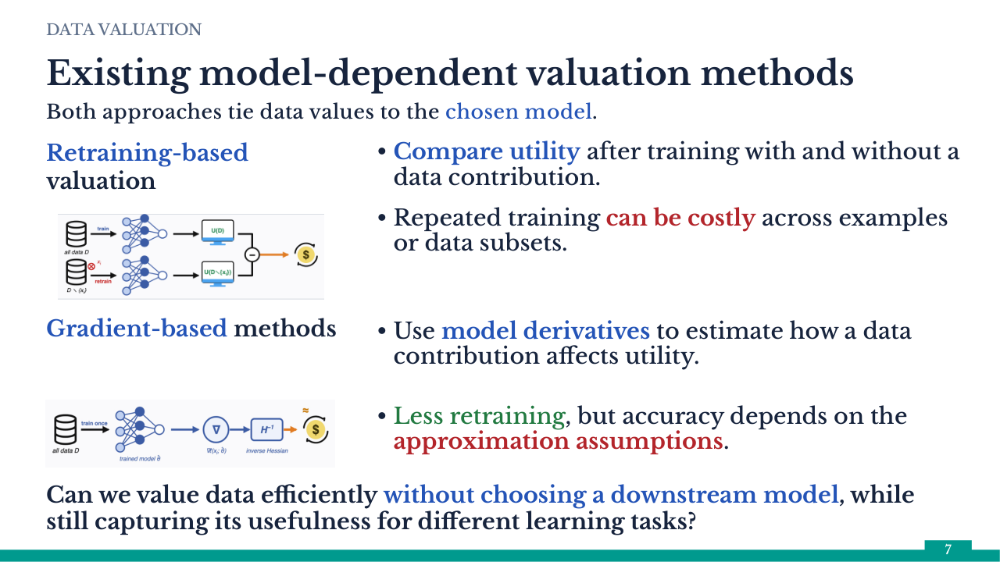
DATA VALUATION Existing model-dependent valuation methods Compare utility after training with and without a data contribution. Retraining-based valuation Repeated training can be costly across examples or data subsets. Use model derivatives to estimate how a data contribution affects utility. Gradient-based methods Less retraining, but accuracy depends on the approximation assumptions. Can we value data efficiently without choosing a downstream model, while still capturing its usefulness for different learning tasks? 7 Both approaches tie data values to the chosen model.
What you will be able to explain
- Specify a valuation objective and its evaluation population.
- Calculate removal value, local influence and coalition credit—and explain their differences.
- Choose and test a responsible data intervention.
7 / 139
Begin with the valuation contract
| Contract | What must be specified |
|---|
| Player | One record, document, person or source |
| Learner A | Model, optimizer, initialization and seeds |
| Utility U | Metric and higher-is-better convention |
| Population E | Whose outcomes count, including groups |
| Baseline U(∅) | No data, or a pretrained base model |
- Compare scores only when the valuation contracts match.
- A rare record can look low-value when its group is absent from the evaluation population.
8 / 139
Value is one question among several
| Question | Example of a distinction |
|---|
| Contribution | Correct duplicate: little extra utility |
| Quality | A low score does not prove a label error |
| Representation | Rare group can be missing from evaluation |
| Rights | Consent and compensation need their own rules |
- Value asks about contribution to a specified objective.
- Quality asks whether data are accurate, suitable and well documented.
- Consent, privacy, fairness and compensation require additional judgments.
10 / 139
Three different contribution questions
| Score | What changes? | Background context |
|---|
| Leave-one-out | Remove a whole player | All other players remain |
| Classical influence | Infinitesimal loss weight | Near one fitted solution |
| Shapley | Add player to a coalition | Average across arrival orders |
- Removal: what changes if this player leaves the full dataset?
- Influence: what changes under a tiny reweighting near a fitted solution?
- Shapley: what does this player add to different subsets of players (coalitions)?
11 / 139
Illustration: three neighbors, one query
| Player | Distance to query | Label |
|---|
| A | 1 | 1 |
| B | 2 | 0 |
| C | 3 | 1 |
- Predict the label of one query whose true label is 1.
- Use the closest available neighbor; the empty set has utility 0.
- Utility is 1 for a correct prediction and 0 otherwise.
13 / 139
Compute utility for each coalition
| S | ∅ | A | B | C | AB | AC | BC | ABC |
|---|
| U(S) | 0 | 1 | 0 | 1 | 1 | 1 | 0 | 1 |
- A wins whenever it is present; otherwise B beats C.
- AB and AC predict 1; BC predicts 0.
- These eight utilities define the entire game.
14 / 139
Try it: who matters to the full dataset?
| S | ∅ | A | B | C | AB | AC | BC | ABC |
|---|
| U(S) | 0 | 1 | 0 | 1 | 1 | 1 | 0 | 1 |
- Full-data utility is U(ABC) = 1.
- What are the removal values of A, B and C?
- Does a zero removal value mean an example is useless?
15 / 139
Worked feedback: removal sees one context
| Removed player | Remaining coalition | Utility after removal | Value |
|---|
| A | BC | 0 | 1 − 0 = 1 |
| B | AC | 1 | 1 − 1 = 0 |
| C | AB | 1 | 1 − 1 = 0 |
- A: 1 − U(BC) = 1. B: 1 − U(AC) = 0. C: 1 − U(AB) = 0.
- C is redundant beside A, yet useful when A is absent.
- Leave-one-out is an intervention at the full dataset.
16 / 139
Feedback: value changes with the query
| Query target | Query gradient at θ = 1 | Upweight-loss derivative |
|---|
| 2 | −1 | +1: locally harmful |
| 0 | +1 | −1: locally helpful |
- The query gradient is now +1, so the loss derivative is −1.
- Upweighting target 0 helps the target-0 query locally.
- The record did not change; the evaluation target did.
23 / 139
A different question: credit across contexts
| Context before C arrives | Utility before | Utility after adding C |
|---|
| No player | 0 | 1 |
| A already present | 1 | 1 |
| B already present | 0 | 0 |
- A player can help before a redundant substitute arrives.
- Shapley averages that player’s marginal utility across coalitions.
- The training procedure and utility still define the game.
25 / 139
Trace the order B → C → A
Query label 1 · A(distance 1,label 1), B(2,0), C(3,1) · nearest neighbor predicts · U(∅) = 0
- B arrives: U(B) − U(∅) = 0.
- C arrives: U(BC) − U(B) = 0.
- A arrives: U(ABC) − U(BC) = 1.
27 / 139
Try it: average all six arrival orders
| Order | ΔA | ΔB | ΔC |
|---|
| ABC | 1 | 0 | 0 |
| ACB | 1 | 0 | 0 |
| BAC | 1 | 0 | 0 |
| BCA | 1 | 0 | 0 |
| CAB | 0 | 0 | 1 |
| CBA | 1 | −1 | 1 |
- Each row gives marginal contributions in A, B, C order.
- Average each player’s column to obtain its Shapley credit.
- Compare the answer with removal values (1, 0, 0).
28 / 139
Feedback: coalition credit reveals the redundancy
| Order | ΔA | ΔB | ΔC |
|---|
| ABC | 1 | 0 | 0 |
| ACB | 1 | 0 | 0 |
| BAC | 1 | 0 | 0 |
| BCA | 1 | 0 | 0 |
| CAB | 0 | 0 | 1 |
| CBA | 1 | −1 | 1 |
- Shapley credit is A = 5/6, B = −1/6, C = 1/3.
- C gets credit for useful early-arrival contexts.
- B hurts this query in one order without being mislabeled.
29 / 139
Feedback: change the objective, change the values
| Domain weights (M, R) | A | B | C |
|---|
| (0.8, 0.2) | 0.4 | 0.4 | 0.2 |
| (0.5, 0.5) | 0.25 | 0.25 | 0.5 |
- With 80/20 domain weights, Shapley credit is (0.4, 0.4, 0.2).
- With 50/50 domain weights, it becomes (0.25, 0.25, 0.5).
- The allocation inherits the evaluation population.
34 / 139
Model-agnostic data valuation

KAIROS · PAPER Model-agnostic data valuation NeurIPS 2025 THE QUESTION Jiongli Zhu* UC San Diego Parjanya Prajakta Prashant* UC San Diego * Equal contribution 8 How can we value data without committing to a particular learning algorithm? An emerging research direction: data-centric, model-agnostic valuation.
A data-level objective for valuation

KAIROS · MODEL-AGNOSTIC DATA VALUATION A data-level objective for valuation distance d(P, Q) training pool Q trusted reference P no downstream training Instead of training a model on Q and evaluating it on a clean, representative validation set P, we directly measure the distributional distance d(P, Q). We value each training point by how it changes the distance between Q and P. For the same model trained on Q, prior work establishes bounds for many distances, under suitable assumptions: Target loss ≤ source loss + C · d(P, Q) + additional terms. 9
From a dataset discrepancy to a point’s value

KAIROS · MODEL-AGNOSTIC DATA VALUATION From a dataset discrepancy to a point’s value Before removal: Q and fixed P Keep the reference P fixed and remove one point from the pool Q. If discrepancy increases, the point was helping. Its value is positive. × remove zᵢ ↓ After removal: Q without the point, same P If discrepancy decreases, the point was hurting. Its value is negative. Exact leave-one-out can require a new discrepancy computation for every point. 𝑣𝐿𝑂𝑂(𝑧𝑖)=𝑑(𝑃,𝑄−𝑖)−𝑑(𝑃,𝑄) 10
Which distance?

KAIROS · MODEL-AGNOSTIC DATA VALUATION Which distance? A value is a change in d(P, Q). Which distance? For disjoint empirical supports, KL can be infinite and total variation maximal, even when the samples are nearby. Wasserstein and kernel MMD use relationships between sample locations to capture more informative differences. Wasserstein-1 and MMD share a test-function view: integral probability metrics. 11
Both are integral probability metrics

KAIROS · MODEL-AGNOSTIC DATA VALUATION Both are integral probability metrics An IPM chooses a critic (or test function) whose average score differs most between P and Q. 𝐼𝑃𝑀𝐹(𝑃,𝑄) = 𝑠𝑢𝑝𝑓 ∈ 𝐹 𝐸𝑃[𝑓] − 𝐸𝑄[𝑓] Wasserstein-1 the transport distance with an IPM form 𝑊1(𝑃,𝑄) = 𝑠𝑢𝑝𝐿𝑖𝑝(𝑓) ≤ 1 𝐸𝑃[𝑓] − 𝐸𝑄[𝑓] 1-Lipschitz critics: scores change no faster than distances between inputs. MMD 𝑀𝑀𝐷(𝑃,𝑄) = 𝑠𝑢𝑝𝑓𝐻 ≤ 1 𝐸𝑃[𝑓] − 𝐸𝑄[𝑓] RKHS unit ball: kernel-defined critics with norm at most one. n = number of data points in each dataset; d = data dimension (number of features). 12 F: allowed critics, f: X → ℝ Classical exact OT: O(n³ log n) + O(dn²) to compute pairwise distances. Gaussian MMD: O(dn²) Closed-form pairwise kernel sums.
RKHS and MMD: three simple ideas

KAIROS · MODEL-AGNOSTIC DATA VALUATION RKHS and MMD: three simple ideas 1. A kernel k(x,y) measures similarity. 2. Dataset becomes an average. Average its feature functions to get its mean embedding. 3. MMD compares the averages. Small MMD means the pool looks like the reference. MMD𝑘(𝑃,𝑄) = 𝜇𝑃 − 𝜇𝑄𝐻 MMD_k(P,Q) = ||μ_P−μ_Q||_H Closed form from pairwise similarities, without explicit feature vectors. 13 MMD𝑘2(𝑃,𝑄) = MMD_k²(P,Q) = 𝐸𝑋,𝑋′ ∼ 𝑃 𝑘(𝑋,𝑋′) E_{X,X′~P} k(X,X′) + + 𝐸𝑌,𝑌′ ∼ 𝑄 𝑘(𝑌,𝑌′) E_{Y,Y′~Q} k(Y,Y′) − 2 − 2 𝐸𝑋 ∼ 𝑃,𝑌 ∼ 𝑄 𝑘(𝑋,𝑌) E_{X~P,Y~Q} k(X,Y) within P within Q across P and Q RKHS norm 𝑘(𝑥,·), 𝑘(𝑦,·)𝐻 = 𝑘(𝑥,𝑦) ⟨k(x,·), k(y,·)⟩_H = k(x,y) The RKHS contains weighted sums of these feature functions. Point feature: 𝜑(𝑥) = 𝑘(𝑥,·) Point feature: φ(x) = k(x,·)
First-order influence of a training point

KAIROS · MODEL-AGNOSTIC DATA VALUATION First-order influence of a training point Zhu, Prashant, Cloninger, Salimi. KAIROS: Scalable Model-Agnostic Data Valuation. NeurIPS 2025. What does the sign mean? Positive influence: more weight on x reduces the discrepancy. Approximating leave-one-out Removing one of many points slightly changes the empirical distribution. We estimate the change in distance using its local sensitivity to that point’s weight. Reweight x and renormalize the other points. Features and labels stay fixed. For n > 1 equally weighted points. The removal approximation assumes differentiability across ε = 0. 14
IPM sensitivity: two terms

KAIROS · MODEL-AGNOSTIC DATA VALUATION IPM sensitivity: two terms Expanding the influence definition gives the following decomposition. Zhu, Prashant, Cloninger, Salimi. KAIROS: Scalable Model-Agnostic Data Valuation. NeurIPS 2025. 𝐼𝐹𝑑(𝑥;𝑃,𝑄) IFd(x;P,Q) f*: optimal critic before the nudge. f*ε: optimal critic after the nudge. Critic-shift term Loss in the original score gap per unit nudge. Point-gap term How much x’s score exceeds the pool’s average, using the original critic. Can we compute influence using the original critic? Reweighting can change which critic best distinguishes P and Q. We must establish when the original critic’s point-gap gives the correct influence. 15
Closed-form MMD influence and its cost

KAIROS · MODEL-AGNOSTIC DATA VALUATION Closed-form MMD influence and its cost The MMD derivative is just kernel similarity. Higher similarity to the trusted reference raises the score. Higher similarity to the current pool lowers the score. Closed-form scores: O(n + m) per point; O(n² + nm) for all n points. Recomputing MMD for all n removals: O(n³ + n²m) total. Zhu, Prashant, Cloninger, Salimi. KAIROS, NeurIPS 2025, Eq. (7) and §3.4. Recompute cost derived from pairwise sums. 16 n training points, m reference points. Kernel evaluations; a dense Gaussian kernel adds a factor d.
Do the scores predict the effect of removing data?

KAIROS · MODEL-AGNOSTIC DATA VALUATION Do the scores predict the effect of removing data? Comparison with prior work: LAVA (Just et al., ICLR 2023). LAVA values data using sensitivity of a class-wise Wasserstein distance. Here we compare its transport-based scores with KAIROS and actual point removal. Wasserstein dual Sinkhorn / LAVA MMD / KAIROS One dot per training point. x: rank by score. y: rank by leave-one-out removal. In this experiment, top-100 overlap with leave-one-out is 99% for KAIROS and 60% for LAVA. Just et al. LAVA: Data Valuation without Pre-Specified Learning Algorithms. ICLR 2023.Zhu, Prashant, Cloninger, Salimi. KAIROS: Scalable Model-Agnostic Data Valuation. NeurIPS 2025. 17
Properties of KAIROS valuation

KAIROS · MODEL-AGNOSTIC DATA VALUATION Properties of KAIROS valuation Symmetry: equivalent effects on the discrepancy give equal scores. Density separation: under the proposition’s assumptions and a suitable Gaussian bandwidth, scores separate specified density regions. Labels: a conditional discrepancy compares label behavior between the pool and reference. Streaming: reuse existing kernel sums and update them for new data. The kernel form supports interpretable scores and efficient updates. Zhu, Prashant, Cloninger, Salimi. KAIROS: Scalable Model-Agnostic Data Valuation. NeurIPS 2025. 18
A bound linking discrepancy to transfer loss

KAIROS · MODEL-AGNOSTIC DATA VALUATION A bound linking discrepancy to transfer loss Feature and label discrepancies control a loss-gap bound under stated assumptions. The theorem bounds loss using feature mismatch and label mismatch. Reducing those discrepancies tightens the bound’s discrepancy term. Tightens a bound; not a guarantee of better test accuracy. Zhu, Prashant, Cloninger, Salimi. KAIROS: Scalable Model-Agnostic Data Valuation. NeurIPS 2025. 19
Finding corrupted examples early

KAIROS · MODEL-AGNOSTIC DATA VALUATION Finding corrupted examples early Inspect from the lowest score upward. How much of the corruption is found? AG News · 20% feature noise AG News · 20% label noise CIFAR-10 · 3% BadNet backdoor x: fraction inspected. y: fraction of corrupted points found. Across eight feature/label-noise settings, KAIROS ranks first in six and second in two. The backdoor panel is a separate test. Zhu, Prashant, Cloninger, Salimi. KAIROS: Scalable Model-Agnostic Data Valuation. NeurIPS 2025. 20 BadNets: trigger-marked images with wrong labels (3% poisoned).
Testing the ranking and scaling to ImageNet

KAIROS · MODEL-AGNOSTIC DATA VALUATION Testing the ranking and scaling to ImageNet Does pruning by score behave, and does it scale? PRUNING BY SCORE · 20% MISLABELED Test accuracy after removing the lowest-valued (a, c) or highest-valued (b, d) points. Compare accuracy after removing low-valued versus high-valued points. IMAGENET · 1.28M IMAGES Feature noise Runtime AUC KAIROS 7m56s 0.869 SAVA 1h58m 0.817 Label noise Runtime AUC KAIROS 7m52s 0.861 SAVA 1h58m 0.484 ResNet-50 features, one A100. AUC of the curve on the previous slide. On ImageNet features, KAIROS scores 1.28M images in about 8 minutes, versus about 2 hours for SAVA, with higher reported detection AUC. Zhu, Prashant, Cloninger, Salimi. KAIROS: Scalable Model-Agnostic Data Valuation. NeurIPS 2025. 21 SAVA: a scalable, batched version of LAVA. Kessler, Le & Nguyen, ICLR 2025.
Data selection and prediction uncertainty
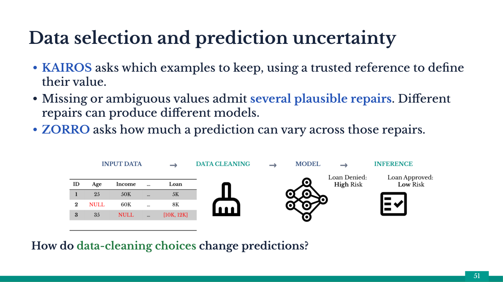
Data selection and prediction uncertainty KAIROS asks which examples to keep, using a trusted reference to define their value. Missing or ambiguous values admit several plausible repairs. Different repairs can produce different models. ZORRO asks how much a prediction can vary across those repairs. How do data-cleaning choices change predictions? 51
Learning from uncertain training data
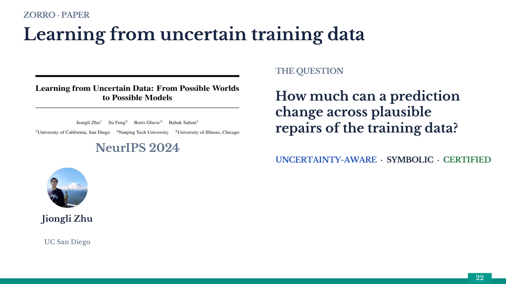
ZORRO · PAPER Learning from uncertain training data NeurIPS 2024 THE QUESTION How much can a prediction change across plausible repairs of the training data? UNCERTAINTY-AWARE · SYMBOLIC · CERTIFIED Jiongli Zhu UC San Diego 22
Possible Worlds Semantics
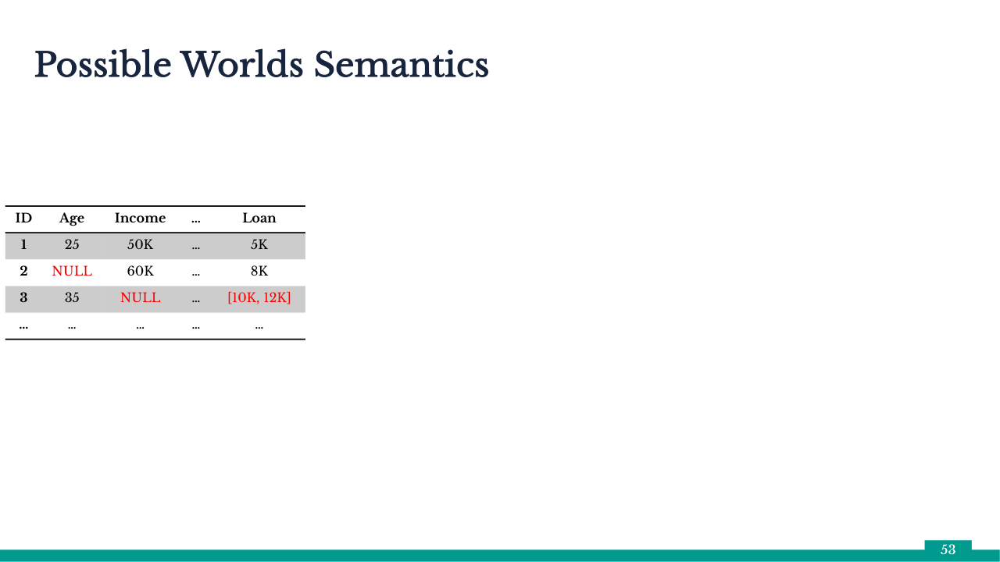
Possible Worlds Semantics ID Age Income … Loan 1 25 50K … 5K 2 NULL 60K … 8K 3 35 NULL … [10K, 12K] … … … … … 53
Shown range
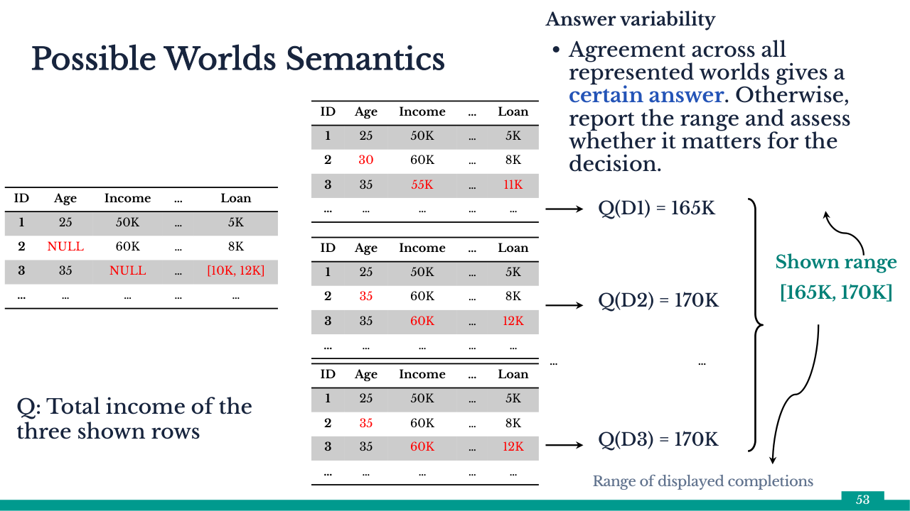
… … Shown range [165K, 170K] Range of displayed completions Q(D1) = 165K Q(D2) = 170K Q(D3) = 170K Agreement across all represented worlds gives a certain answer. Otherwise, report the range and assess whether it matters for the decision. Answer variability Possible Worlds Semantics Q: Total income of the three shown rows ID Age Income … Loan 1 25 50K … 5K 2 NULL 60K … 8K 3 35 NULL … [10K, 12K] … … … … … ID Age Income … Loan 1 25 50K … 5K 2 30 60K … 8K 3 35 55K … 11K … … … … … ID Age Income … Loan 1 25 50K … 5K 2 35 60K … 8K 3 35 60K … 12K … … … … … ID Age Income … Loan 1 25 50K … 5K 2 35 60K … 8K 3 35 60K … 12K … … … … … 53
Dataset with Quality Issues
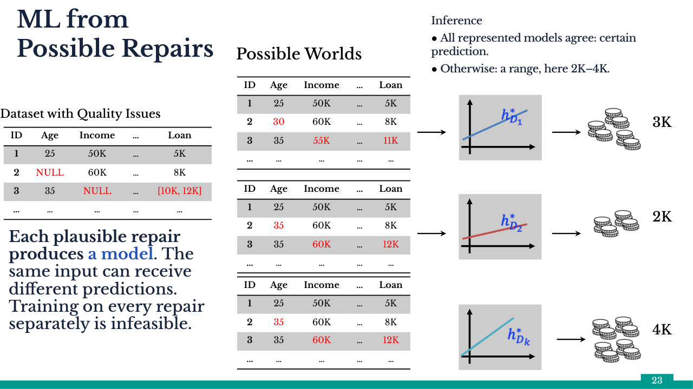
ID Age Income … Loan 1 25 50K … 5K 2 NULL 60K … 8K 3 35 NULL … [10K, 12K] … … … … … Dataset with Quality Issues Possible Worlds ID Age Income … Loan 1 25 50K … 5K 2 30 60K … 8K 3 35 55K … 11K … … … … … ID Age Income … Loan 1 25 50K … 5K 2 35 60K … 8K 3 35 60K … 12K … … … … … ID Age Income … Loan 1 25 50K … 5K 2 35 60K … 8K 3 35 60K … 12K … … … … … 3K 2K 4K Inference All represented models agree: certain prediction. Otherwise: a range, here 2K–4K. ML from Possible Repairs Each plausible repair produces a model. The same input can receive different predictions. Training on every repair separately is infeasible. 23
Compact reasoning over possible models
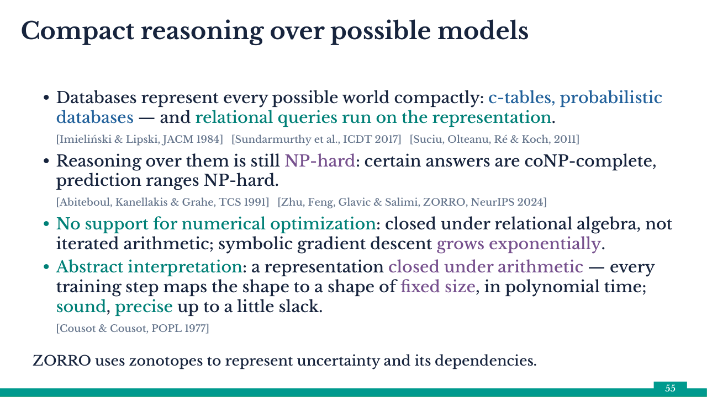
Compact reasoning over possible models Databases represent every possible world compactly: c-tables, probabilistic databases — and relational queries run on the representation.[Imieliński & Lipski, JACM 1984] [Sundarmurthy et al., ICDT 2017] [Suciu, Olteanu, Ré & Koch, 2011] Reasoning over them is still NP-hard: certain answers are coNP-complete, prediction ranges NP-hard.[Abiteboul, Kanellakis & Grahe, TCS 1991] [Zhu, Feng, Glavic & Salimi, ZORRO, NeurIPS 2024] No support for numerical optimization: closed under relational algebra, not iterated arithmetic; symbolic gradient descent grows exponentially. Abstract interpretation: a representation closed under arithmetic — every training step maps the shape to a shape of fixed size, in polynomial time; sound, precise up to a little slack.[Cousot & Cousot, POPL 1977] ZORRO uses zonotopes to represent uncertainty and its dependencies. 55
Dataset with Quality Issues

ID Age Income … Loan 1 25 50K … 5K 2 NULL 60K … 8K 3 35 NULL … [10K, 12K] … … … … … Dataset with Quality Issues Possible Worlds ID Age Income … Loan 1 25 50K … 5K 2 30 60K … 8K 3 35 55K … 11K … … … … … ID Age Income … Loan 1 25 50K … 5K 2 35 60K … 8K 3 35 60K … 12K … … … … … ID Age Income … Loan 1 25 50K … 5K 2 35 60K … 8K 3 35 60K … 12K … … … … … Zonotopes encode possible worlds 56 𝐴𝑔𝑒: 50 𝐼𝑛𝑐𝑜𝑚𝑒: 80𝐾 + 10𝐾 𝜀1 𝑆𝑎𝑣𝑖𝑛𝑔𝑠: 11𝐾 + 1𝐾 𝜀2 𝜀1, 𝜀2 ∈ [−1, 1] c + ε1 g1 c + ε1 g1 + ε2 g2 c + ε1 g1 + ε2 g2 + ε3 g3 Each εi varies freely in [−1, 1]. Line segment Parallelogram Hexagon
Possible World 1 Possible World 2
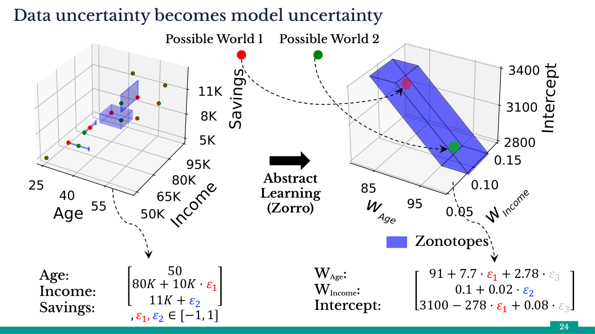
Possible World 1 Possible World 2 Zonotopes Abstract Learning (Zorro) 91+7.7⋅𝜀1+2.78⋅𝜀30.1+0.02⋅𝜀23100−278⋅𝜀1+0.08⋅𝜀3 WAge: WIncome: Intercept: Data uncertainty becomes model uncertainty 5080𝐾+10𝐾⋅𝜀111𝐾+𝜀2 ,𝜀1,𝜀2∈[−1, 1] Age: Income: Savings: 24
ZORRO: challenges and contributions
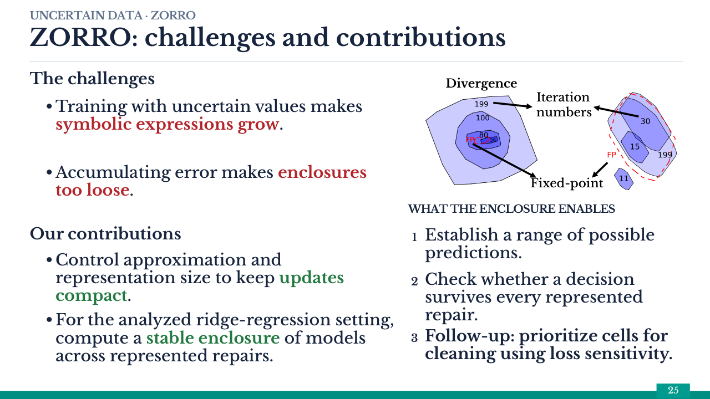
UNCERTAIN DATA · ZORRO ZORRO: challenges and contributions WHAT THE ENCLOSURE ENABLES 1 Establish a range of possible predictions. 2 Check whether a decision survives every represented repair. 3 Follow-up: prioritize cells for cleaning using loss sensitivity. Divergence Iteration numbers Fixed-point 25 The challenges Training with uncertain values makes symbolic expressions grow. Accumulating error makes enclosures too loose. Our contributions Control approximation and representation size to keep updates compact. For the analyzed ridge-regression setting, compute a stable enclosure of models across represented repairs.
Targeted cleaning under a limited budget
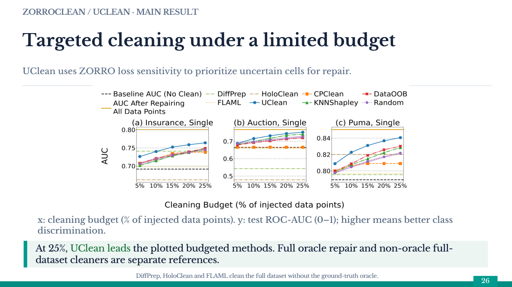
ZORROCLEAN / UCLEAN · MAIN RESULT Targeted cleaning under a limited budget UClean uses ZORRO loss sensitivity to prioritize uncertain cells for repair. At 25%, UClean leads the plotted budgeted methods. Full oracle repair and non-oracle full-dataset cleaners are separate references. DiffPrep, HoloClean and FLAML clean the full dataset without the ground-truth oracle. 26 x: cleaning budget (% of injected data points). y: test ROC-AUC (0–1); higher means better class discrimination.
For LLMs, first identify the training stage
| Question | Input and stage | Output |
|---|
| Attribution | Fixed model + training candidates + behavior query | Sensitivity ranking |
| Selection | Candidate instructions + target development data | Subset for future training |
| RAG evidence | Current query + retrieved context at inference | Answer grounded in that context |
- Pretraining learns from broad token sequences.
- Instruction tuning adapts weights using instruction–response examples.
- Retrieved context is an inference input; it need not update weights.
60 / 139
Attribution: which training data affected this behavior?
Grosse et al. · technical report · 2023
| Component | Specified object |
|---|
| Behavior query | Prefix and completion loss at a fixed checkpoint |
| Candidate | A pretraining sequence or sequence segment |
| Computation | Query/candidate gradients and approximate inverse curvature |
| Result | Ranked local completion-loss sensitivity |
- Grosse and colleagues study training-example influence on language-model behavior.
- Query prefix and completion + candidate training sequences → gradients and approximate curvature.
- The output ranks local sensitivity of the specified completion loss.
61 / 139
A plausible document is not yet an intervention test
| Test component | What must be observed |
|---|
| Prediction | A defined change in behavior or loss |
| Intervention | Remove or reweight the declared data unit |
| Comparison | Suitable random or matched controls and repeated seeds |
| Evaluation | Reserved queries and the stated outcome |
- Inspect what the score predicts: a loss change, a response change or a similarity.
- Check whether the proposed data intervention realizes that prediction.
- Keep attribution separate from memorization and entitlement.
63 / 139
Selection: which instructions should we train on next?
Xia, Malladi et al. · ICML 2024
- A broad instruction pool may contain many examples irrelevant to a target capability.
- LESS selects examples using target-validation gradient similarity.
- The selected subset is then used in a separate fine-tuning run.
64 / 139
Selection data are not the final test
| Phase | Examples allowed | What they decide |
|---|
| Warmup / feature construction | Candidate-pool sample | Selection representations |
| Subset choice | Target-development examples | Which candidates to keep |
| Final evaluation | Untouched target test | Whether adaptation generalizes |
- Target-validation examples guide which training examples are selected.
- The final test evaluates the model after selected-subset training.
- Compare equal budgets and count warmup, scoring and training costs.
67 / 139
Disentangle representation from selection
Nayak et al. · ICML 2026
| Component | Controlled comparison |
|---|
| Representation | Gradient features versus embedding alternatives |
| Selection rule | Hold greedy round-robin fixed in the next plots |
| Budget | Number of candidate examples selected |
| Evaluation | Query loss versus held-out task performance |
- A scorer and a subset-selection algorithm are different components.
- Nayak and colleagues compare representations under controlled selection rules.
- They vary target tasks, candidate pools and budgets.
69 / 139
Choose the question before choosing the score
| Decision | Relevant question | Validation target |
|---|
| Removal | What changes without this player? | Actual refit outcome |
| Coalition credit | What does the player add across contexts? | The specified cooperative game |
| Future selection | Which subset should train the next model? | Held-out performance after training |
- Remove a player: use the full-data intervention or a validated approximation.
- Allocate coalition credit: specify the game and estimate Shapley carefully.
- Select future training data: test the chosen subset after training.
72 / 139
Transfer exercise: adapt an assistant responsibly
- You have a pretrained model, 100,000 candidate instructions and a 5,000-example training budget.
- The target population includes common requests and a rare safety-critical group.
- Design the selection, comparison and evaluation before choosing a method.
73 / 139
Feedback: make the intervention testable
| Design choice | Defensible baseline or check |
|---|
| Data budget | Same 5,000-example budget for random selection |
| Adaptation benefit | Compare with the unchanged base model |
| Generalization | Untouched final test, not the selection set |
| Responsibility | Rare-group outcomes, cost and uncertainty |
- Use target-development data for selection and keep a separate final test.
- Compare selected data with random selection, the base model and feasible full-data training.
- Report overall and group outcomes, cost and uncertainty.
74 / 139
Reliability when language models use data
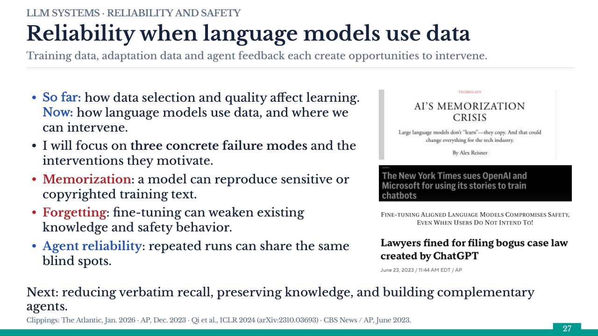
LLM SYSTEMS · RELIABILITY AND SAFETY Reliability when language models use data Training data, adaptation data and agent feedback each create opportunities to intervene. So far: how data selection and quality affect learning. Now: how language models use data, and where we can intervene. I will focus on three concrete failure modes and the interventions they motivate. Memorization: a model can reproduce sensitive or copyrighted training text. Forgetting: fine-tuning can weaken existing knowledge and safety behavior. Agent reliability: repeated runs can share the same blind spots. Next: reducing verbatim recall, preserving knowledge, and building complementary agents. Clippings: The Atlantic, Jan. 2026 · AP, Dec. 2023 · Qi et al., ICLR 2024 (arXiv:2310.03693) · CBS News / AP, June 2023. 27
Verbatim memorization in language models
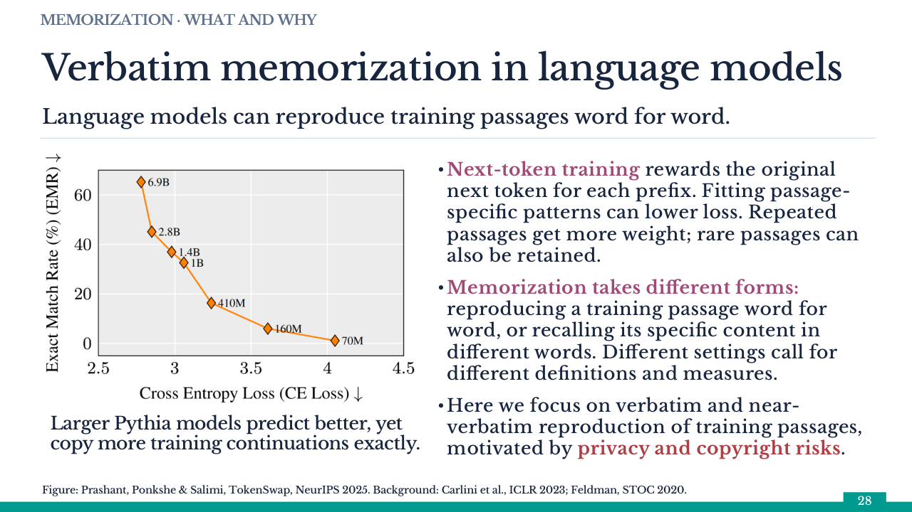
MEMORIZATION · WHAT AND WHY Verbatim memorization in language models Language models can reproduce training passages word for word. Next-token training rewards the original next token for each prefix. Fitting passage-specific patterns can lower loss. Repeated passages get more weight; rare passages can also be retained. Memorization takes different forms: reproducing a training passage word for word, or recalling its specific content in different words. Different settings call for different definitions and measures. Here we focus on verbatim and near-verbatim reproduction of training passages, motivated by privacy and copyright risks. Larger Pythia models predict better, yet copy more training continuations exactly. Figure: Prashant, Ponkshe & Salimi, TokenSwap, NeurIPS 2025. Background: Carlini et al., ICLR 2023; Feldman, STOC 2020. 28
Existing defenses, and the access they need
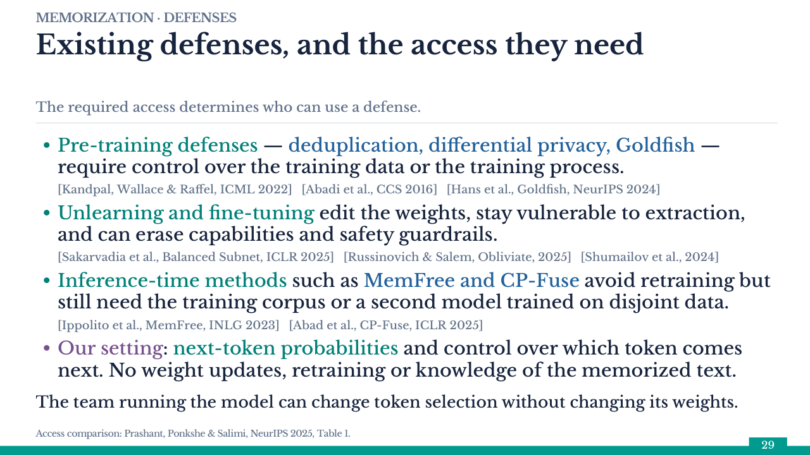
MEMORIZATION · DEFENSES Existing defenses, and the access they need The required access determines who can use a defense. Pre-training defenses — deduplication, differential privacy, Goldfish — require control over the training data or the training process.[Kandpal, Wallace & Raffel, ICML 2022] [Abadi et al., CCS 2016] [Hans et al., Goldfish, NeurIPS 2024] Unlearning and fine-tuning edit the weights, stay vulnerable to extraction, and can erase capabilities and safety guardrails.[Sakarvadia et al., Balanced Subnet, ICLR 2025] [Russinovich & Salem, Obliviate, 2025] [Shumailov et al., 2024] Inference-time methods such as MemFree and CP-Fuse avoid retraining but still need the training corpus or a second model trained on disjoint data.[Ippolito et al., MemFree, INLG 2023] [Abad et al., CP-Fuse, ICLR 2025] Our setting: next-token probabilities and control over which token comes next. No weight updates, retraining or knowledge of the memorized text. The team running the model can change token selection without changing its weights. Access comparison: Prashant, Ponkshe & Salimi, NeurIPS 2025, Table 1. 29
Can small-model guidance reduce verbatim recall during generation?
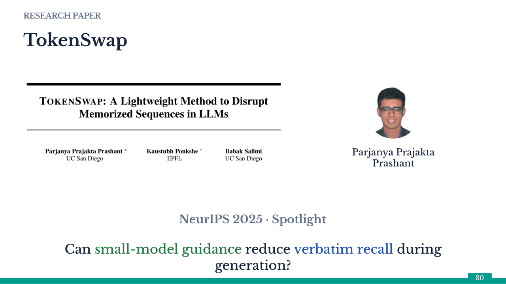
RESEARCH PAPER TokenSwap NeurIPS 2025 · Spotlight Can small-model guidance reduce verbatim recall during generation? 30 Parjanya Prajakta Prashant
TokenSwap: swap probabilities for function words
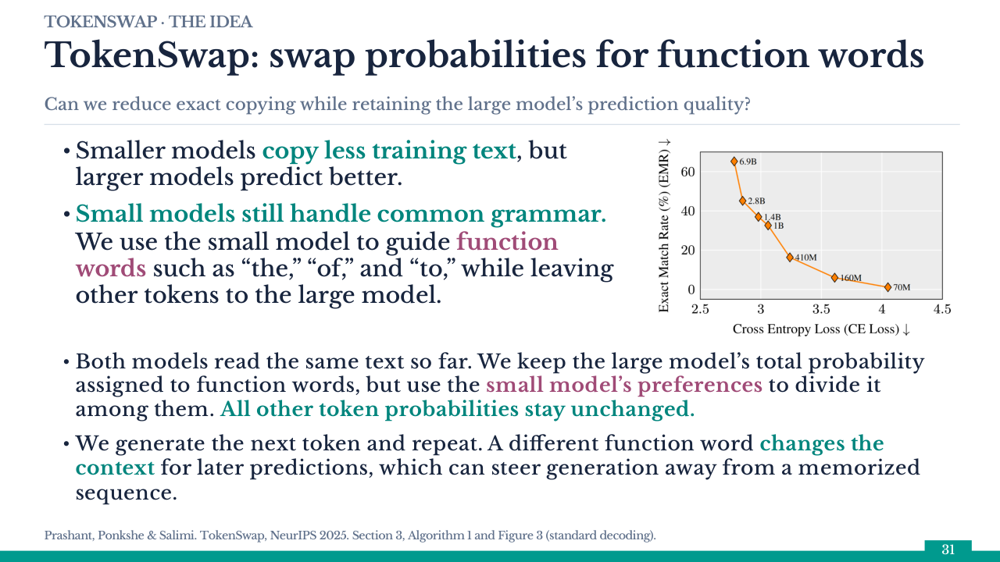
TOKENSWAP · THE IDEA TokenSwap: swap probabilities for function words Can we reduce exact copying while retaining the large model’s prediction quality? Smaller models copy less training text, but larger models predict better. Small models still handle common grammar. We use the small model to guide function words such as “the,” “of,” and “to,” while leaving other tokens to the large model. Both models read the same text so far. We keep the large model’s total probability assigned to function words, but use the small model’s preferences to divide it among them. All other token probabilities stay unchanged. We generate the next token and repeat. A different function word changes the context for later predictions, which can steer generation away from a memorized sequence. Prashant, Ponkshe & Salimi. TokenSwap, NeurIPS 2025. Section 3, Algorithm 1 and Figure 3 (standard decoding). 31
TokenSwap at a glance
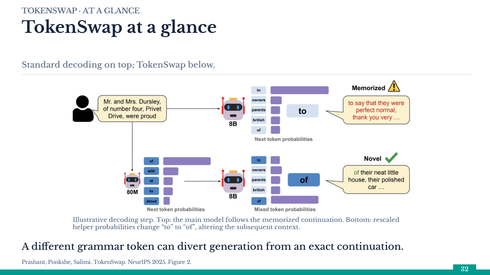
TOKENSWAP · AT A GLANCE TokenSwap at a glance Standard decoding on top; TokenSwap below. Illustrative decoding step. Top: the main model follows the memorized continuation. Bottom: rescaled helper probabilities change “to” to “of”, altering the subsequent context. A different grammar token can divert generation from an exact continuation. Prashant, Ponkshe, Salimi. TokenSwap. NeurIPS 2025. Figure 2. 32
Less copying, little change in measured quality
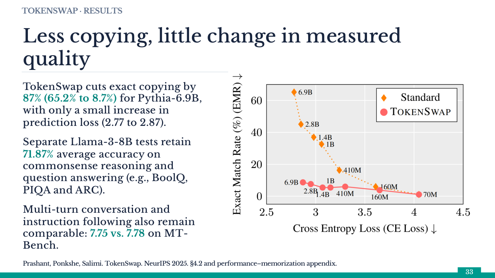
Less copying, little change in measured quality TOKENSWAP · RESULTS TokenSwap cuts exact copying by 87% (65.2% to 8.7%) for Pythia-6.9B, with only a small increase in prediction loss (2.77 to 2.87). Separate Llama-3-8B tests retain 71.87% average accuracy on commonsense reasoning and question answering (e.g., BoolQ, PIQA and ARC). Multi-turn conversation and instruction following also remain comparable: 7.75 vs. 7.78 on MT-Bench. Prashant, Ponkshe, Salimi. TokenSwap. NeurIPS 2025. §4.2 and performance–memorization appendix. 33
Fine-tuning without forgetting
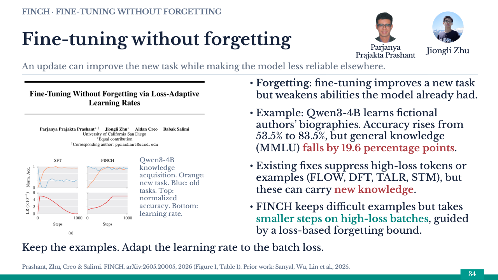
FINCH · FINE-TUNING WITHOUT FORGETTING Fine-tuning without forgetting An update can improve the new task while making the model less reliable elsewhere. Qwen3-4B knowledge acquisition. Orange: new task. Blue: old tasks. Top: normalized accuracy. Bottom: learning rate. Forgetting: fine-tuning improves a new task but weakens abilities the model already had. Example: Qwen3-4B learns fictional authors’ biographies. Accuracy rises from 53.5% to 83.5%, but general knowledge (MMLU) falls by 19.6 percentage points. Existing fixes suppress high-loss tokens or examples (FLOW, DFT, TALR, STM), but these can carry new knowledge. FINCH keeps difficult examples but takes smaller steps on high-loss batches, guided by a loss-based forgetting bound. Keep the examples. Adapt the learning rate to the batch loss. Prashant, Zhu, Creo & Salimi. FINCH, arXiv:2605.20005, 2026 (Figure 1, Table 1). Prior work: Sanyal, Wu, Lin et al., 2025. 34 Parjanya Prajakta Prashant Jiongli Zhu
DivSkill-SQL
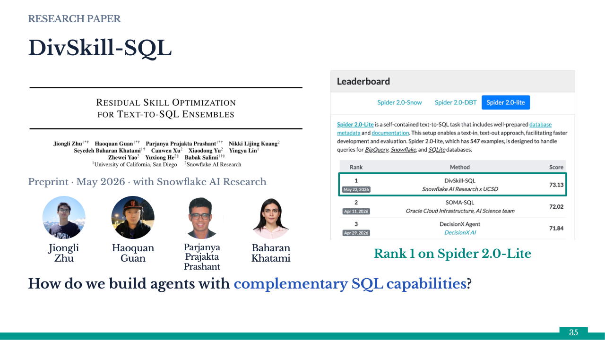
RESEARCH PAPER DivSkill-SQL Preprint · May 2026 · with Snowflake AI Research How do we build agents with complementary SQL capabilities? 35 Rank 1 on Spider 2.0-Lite Jiongli Zhu Parjanya Prajakta Prashant Haoquan Guan Baharan Khatami
Text-to-SQL and the Pass@K ceiling
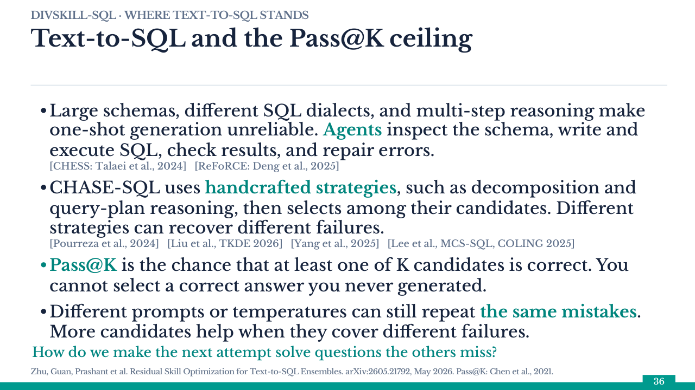
DIVSKILL-SQL · WHERE TEXT-TO-SQL STANDS Text-to-SQL and the Pass@K ceiling Large schemas, different SQL dialects, and multi-step reasoning make one-shot generation unreliable. Agents inspect the schema, write and execute SQL, check results, and repair errors.[CHESS: Talaei et al., 2024] [ReFoRCE: Deng et al., 2025] CHASE-SQL uses handcrafted strategies, such as decomposition and query-plan reasoning, then selects among their candidates. Different strategies can recover different failures.[Pourreza et al., 2024] [Liu et al., TKDE 2026] [Yang et al., 2025] [Lee et al., MCS-SQL, COLING 2025] Pass@K is the chance that at least one of K candidates is correct. You cannot select a correct answer you never generated. Different prompts or temperatures can still repeat the same mistakes. More candidates help when they cover different failures. How do we make the next attempt solve questions the others miss? Zhu, Guan, Prashant et al. Residual Skill Optimization for Text-to-SQL Ensembles. arXiv:2605.21792, May 2026. Pass@K: Chen et al., 2021. 36
Skills are strategy prompts
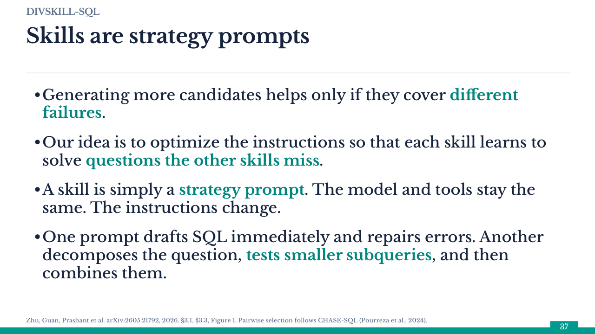
Skills are strategy prompts DIVSKILL-SQL Generating more candidates helps only if they cover different failures. Our idea is to optimize the instructions so that each skill learns to solve questions the other skills miss. A skill is simply a strategy prompt. The model and tools stay the same. The instructions change. One prompt drafts SQL immediately and repairs errors. Another decomposes the question, tests smaller subqueries, and then combines them. Zhu, Guan, Prashant et al. arXiv:2605.21792, 2026. §3.1, §3.3, Figure 1. Pairwise selection follows CHASE-SQL (Pourreza et al., 2024). 37
Optimize each skill on what the others miss
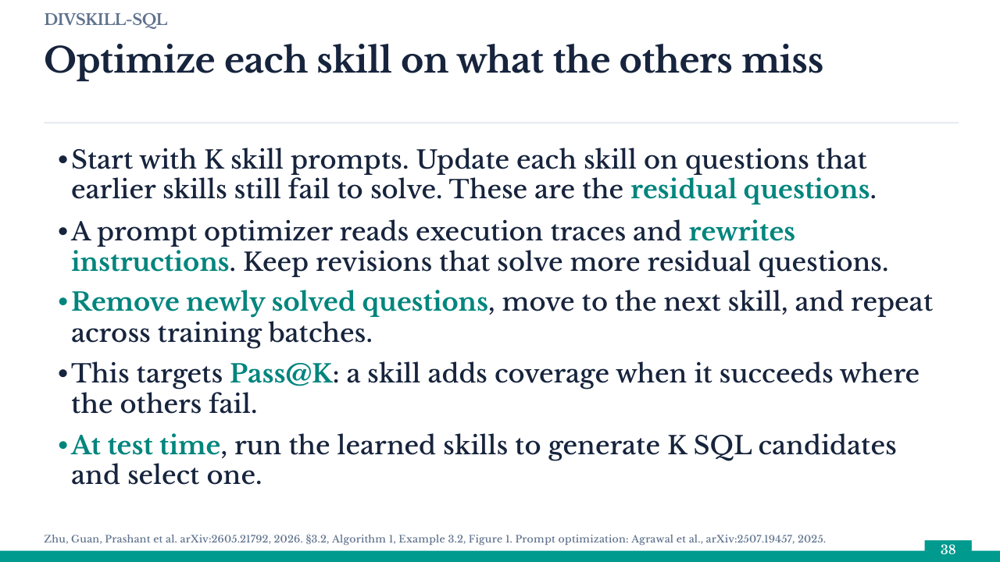
DIVSKILL-SQL Optimize each skill on what the others miss Start with K skill prompts. Update each skill on questions that earlier skills still fail to solve. These are the residual questions. A prompt optimizer reads execution traces and rewrites instructions. Keep revisions that solve more residual questions. Remove newly solved questions, move to the next skill, and repeat across training batches. This targets Pass@K: a skill adds coverage when it succeeds where the others fail. At test time, run the learned skills to generate K SQL candidates and select one. Zhu, Guan, Prashant et al. arXiv:2605.21792, 2026. §3.2, Algorithm 1, Example 3.2, Figure 1. Prompt optimization: Agrawal et al., arXiv:2507.19457, 2025. 38
Higher selected accuracy and cross-dialect transfer
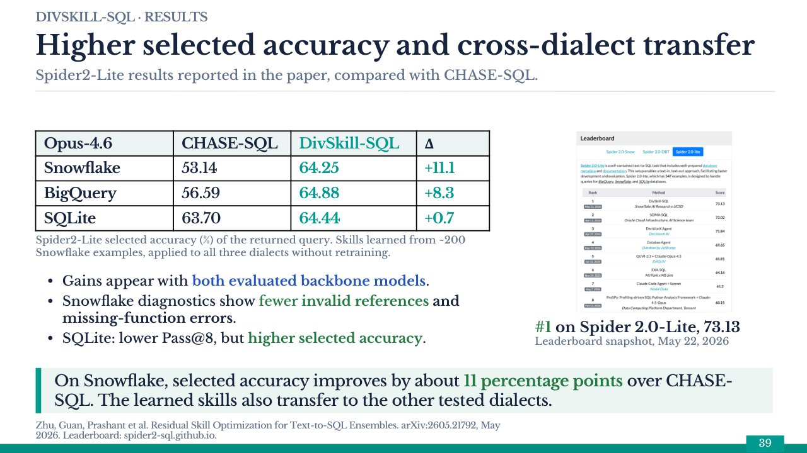
DIVSKILL-SQL · RESULTS Higher selected accuracy and cross-dialect transfer Spider2-Lite results reported in the paper, compared with CHASE-SQL. Opus-4.6 CHASE-SQL DivSkill-SQL Δ Snowflake 53.14 64.25 +11.1 BigQuery 56.59 64.88 +8.3 SQLite 63.70 64.44 +0.7 Spider2-Lite selected accuracy (%) of the returned query. Skills learned from ~200 Snowflake examples, applied to all three dialects without retraining. Gains appear with both evaluated backbone models. Snowflake diagnostics show fewer invalid references and missing-function errors. SQLite: lower Pass@8, but higher selected accuracy. #1 on Spider 2.0-Lite, 73.13 Leaderboard snapshot, May 22, 2026 On Snowflake, selected accuracy improves by about 11 percentage points over CHASE-SQL. The learned skills also transfer to the other tested dialects. Zhu, Guan, Prashant et al. Residual Skill Optimization for Text-to-SQL Ensembles. arXiv:2605.21792, May 2026. Leaderboard: spider2-sql.github.io. 39
Conclusion
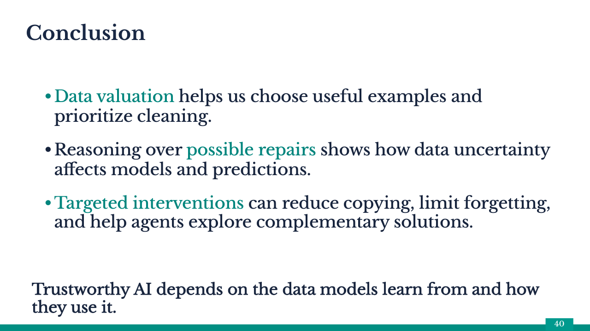
Conclusion 40 Data valuation helps us choose useful examples and prioritize cleaning. Reasoning over possible repairs shows how data uncertainty affects models and predictions. Targeted interventions can reduce copying, limit forgetting, and help agents explore complementary solutions. Trustworthy AI depends on the data models learn from and how they use it.
Valuable for the decision we can defend
| Opening decision | What the lecture gives us |
|---|
| Inspect / repair | A ranking plus verification and a controlled audit |
| Retain / reweight | A defined outcome and intervention test |
| Reward / compensate | A specified game plus separate identity and policy rules |
- Define the contribution, objective, population and baseline.
- Use the score whose question matches the intended intervention.
- Validate the action—and account for people beyond the aggregate metric.
89 / 139
Backup: evidence, ablations, and technical details
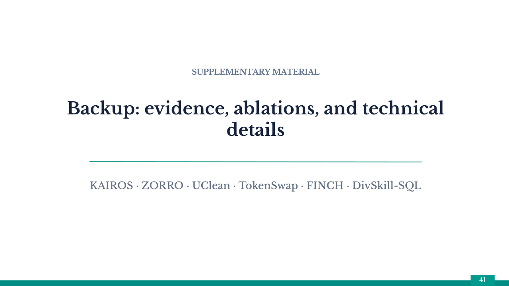
SUPPLEMENTARY MATERIAL Backup: evidence, ablations, and technical details KAIROS · ZORRO · UClean · TokenSwap · FINCH · DivSkill-SQL 41
An RKHS is a function space built from a kernel
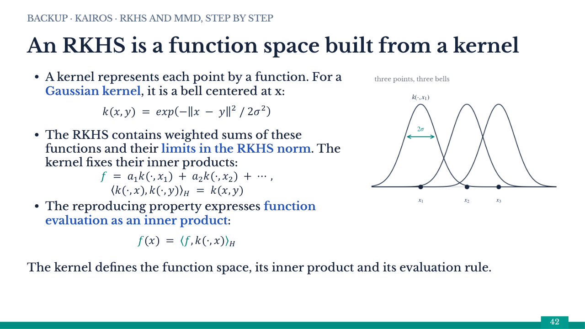
BACKUP · KAIROS · RKHS AND MMD, STEP BY STEP An RKHS is a function space built from a kernel A kernel represents each point by a function. For a Gaussian kernel, it is a bell centered at x: 𝑘(𝑥, 𝑦) = 𝑒𝑥𝑝−𝑥 − 𝑦2 / 2𝜎2 The RKHS contains weighted sums of these functions and their limits in the RKHS norm. The kernel fixes their inner products: 𝑓 = 𝑎1𝑘(·, 𝑥1) + 𝑎2𝑘(·, 𝑥2) + ⋯, 𝑘(·, 𝑥), 𝑘(·, 𝑦)𝐻 = 𝑘(𝑥, 𝑦) The reproducing property expresses function evaluation as an inner product: 𝑓(𝑥) = 𝑓, 𝑘(·, 𝑥)𝐻 The kernel defines the function space, its inner product and its evaluation rule. 42
Why the RKHS choice makes MMD computable
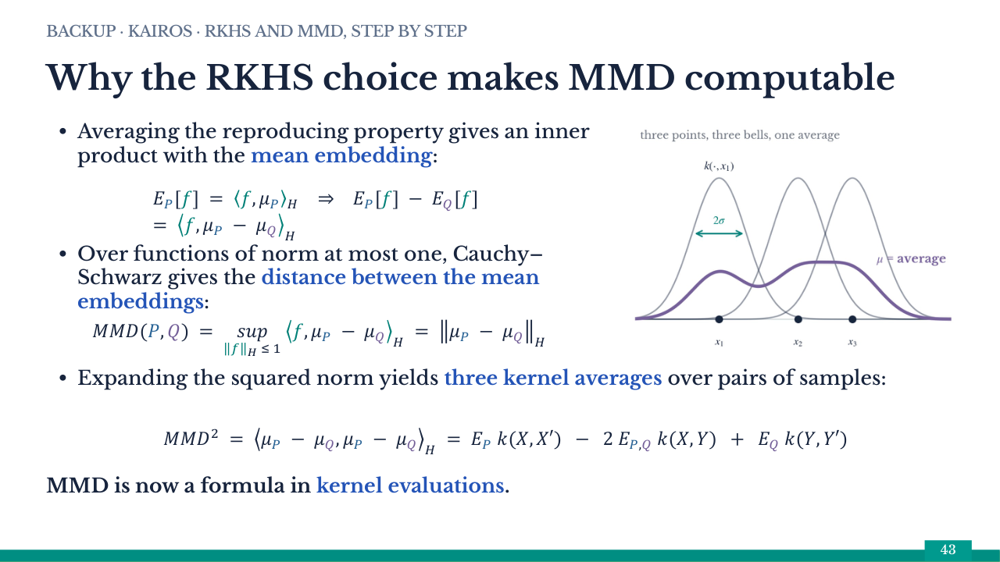
BACKUP · KAIROS · RKHS AND MMD, STEP BY STEP Why the RKHS choice makes MMD computable Averaging the reproducing property gives an inner product with the mean embedding: 𝐸𝑃[𝑓] = 𝑓, 𝜇𝑃𝐻 ⇒ 𝐸𝑃[𝑓] − 𝐸𝑄[𝑓] = 𝑓, 𝜇𝑃 − 𝜇𝑄𝐻 Over functions of norm at most one, Cauchy–Schwarz gives the distance between the mean embeddings: 𝑀𝑀𝐷(𝑃, 𝑄) = 𝑠𝑢𝑝𝑓𝐻 ≤ 1 𝑓, 𝜇𝑃 − 𝜇𝑄𝐻 = 𝜇𝑃 − 𝜇𝑄𝐻 Expanding the squared norm yields three kernel averages over pairs of samples: 𝑀𝑀𝐷2 = 𝜇𝑃 − 𝜇𝑄, 𝜇𝑃 − 𝜇𝑄𝐻 = 𝐸𝑃 𝑘(𝑋, 𝑋′) − 2 𝐸𝑃,𝑄 𝑘(𝑋, 𝑌) + 𝐸𝑄 𝑘(𝑌, 𝑌′) MMD is now a formula in kernel evaluations. 43
Two skills, two trajectories
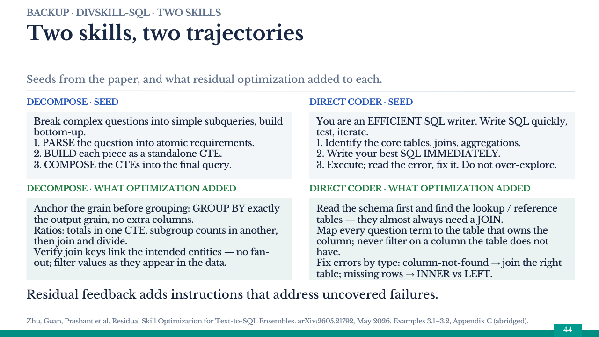
BACKUP · DIVSKILL-SQL · TWO SKILLS Two skills, two trajectories Seeds from the paper, and what residual optimization added to each. DECOMPOSE · SEED Break complex questions into simple subqueries, build bottom-up. 1. PARSE the question into atomic requirements. 2. BUILD each piece as a standalone CTE. 3. COMPOSE the CTEs into the final query. DECOMPOSE · WHAT OPTIMIZATION ADDED Anchor the grain before grouping: GROUP BY exactly the output grain, no extra columns. Ratios: totals in one CTE, subgroup counts in another, then join and divide. Verify join keys link the intended entities — no fan-out; filter values as they appear in the data. DIRECT CODER · SEED You are an EFFICIENT SQL writer. Write SQL quickly, test, iterate. 1. Identify the core tables, joins, aggregations. 2. Write your best SQL IMMEDIATELY. 3. Execute; read the error, fix it. Do not over-explore. DIRECT CODER · WHAT OPTIMIZATION ADDED Read the schema first and find the lookup / reference tables — they almost always need a JOIN. Map every question term to the table that owns the column; never filter on a column the table does not have. Fix errors by type: column-not-found → join the right table; missing rows → INNER vs LEFT. Residual feedback adds instructions that address uncovered failures. Zhu, Guan, Prashant et al. Residual Skill Optimization for Text-to-SQL Ensembles. arXiv:2605.21792, May 2026. Examples 3.1–3.2, Appendix C (abridged). 44
Optimizing Pass@K, and where we differ
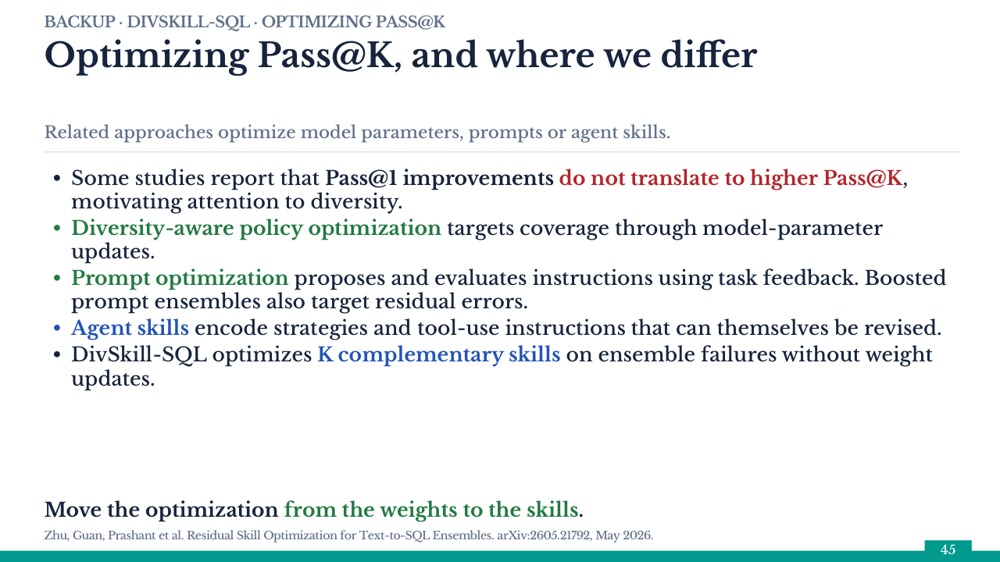
BACKUP · DIVSKILL-SQL · OPTIMIZING PASS@K Optimizing Pass@K, and where we differ Related approaches optimize model parameters, prompts or agent skills. Some studies report that Pass@1 improvements do not translate to higher Pass@K, motivating attention to diversity. Diversity-aware policy optimization targets coverage through model-parameter updates. Prompt optimization proposes and evaluates instructions using task feedback. Boosted prompt ensembles also target residual errors. Agent skills encode strategies and tool-use instructions that can themselves be revised. DivSkill-SQL optimizes K complementary skills on ensemble failures without weight updates. Move the optimization from the weights to the skills. Zhu, Guan, Prashant et al. Residual Skill Optimization for Text-to-SQL Ensembles. arXiv:2605.21792, May 2026. 45
Guarantee for residual skill optimization
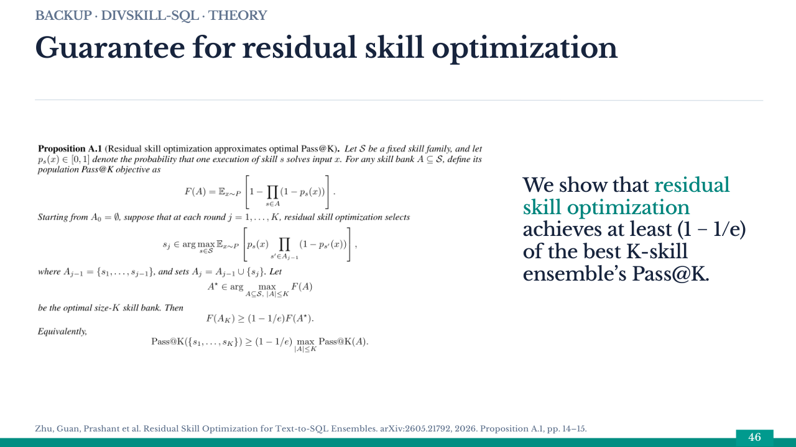
BACKUP · DIVSKILL-SQL · THEORY Guarantee for residual skill optimization Zhu, Guan, Prashant et al. Residual Skill Optimization for Text-to-SQL Ensembles. arXiv:2605.21792, 2026. Proposition A.1, pp. 14–15. 46 We show that residual skill optimization achieves at least (1 − 1/e) of the best K-skill ensemble’s Pass@K.
Memorization stress tests and separate utility checks
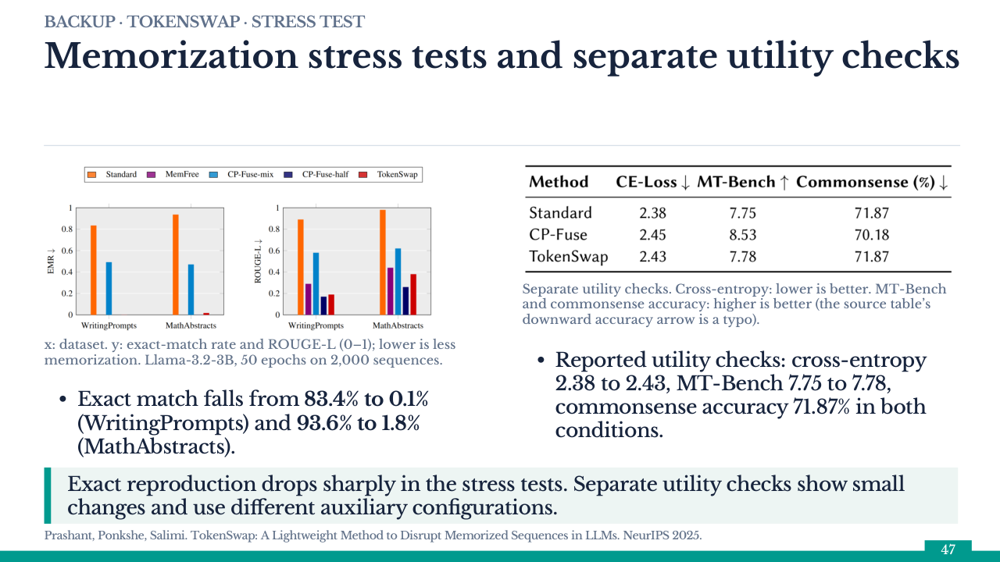
Memorization stress tests and separate utility checks BACKUP · TOKENSWAP · STRESS TEST x: dataset. y: exact-match rate and ROUGE-L (0–1); lower is less memorization. Llama-3.2-3B, 50 epochs on 2,000 sequences. Exact match falls from 83.4% to 0.1% (WritingPrompts) and 93.6% to 1.8% (MathAbstracts). Separate utility checks. Cross-entropy: lower is better. MT-Bench and commonsense accuracy: higher is better (the source table’s downward accuracy arrow is a typo). Reported utility checks: cross-entropy 2.38 to 2.43, MT-Bench 7.75 to 7.78, commonsense accuracy 71.87% in both conditions. Exact reproduction drops sharply in the stress tests. Separate utility checks show small changes and use different auxiliary configurations. Prashant, Ponkshe, Salimi. TokenSwap: A Lightweight Method to Disrupt Memorized Sequences in LLMs. NeurIPS 2025. 47
Directional influence and transport objectives
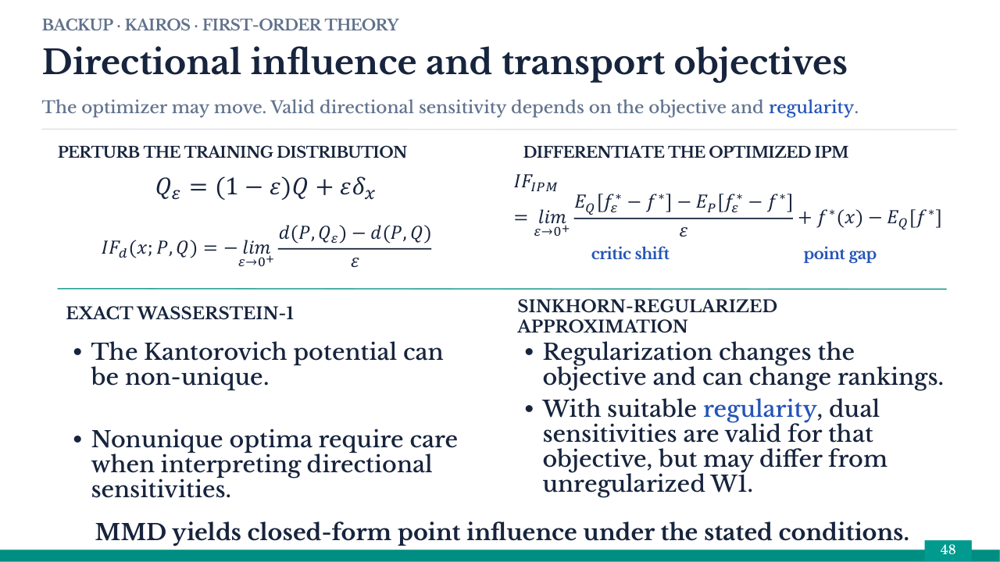
Directional influence and transport objectives The optimizer may move. Valid directional sensitivity depends on the objective and regularity. PERTURB THE TRAINING DISTRIBUTION 𝑄𝜀=(1−𝜀)𝑄+𝜀𝛿𝑥 𝐼𝐹𝑑(𝑥;𝑃,𝑄)=−𝑙𝑖𝑚𝜀→0+𝑑(𝑃,𝑄𝜀)−𝑑(𝑃,𝑄)𝜀 DIFFERENTIATE THE OPTIMIZED IPM 𝐼𝐹𝐼𝑃𝑀=𝑙𝑖𝑚𝜀→0+𝐸𝑄[𝑓𝜀∗−𝑓∗]−𝐸𝑃[𝑓𝜀∗−𝑓∗]𝜀+𝑓∗(𝑥)−𝐸𝑄[𝑓∗] critic shift point gap EXACT WASSERSTEIN-1 The Kantorovich potential can be non-unique. Nonunique optima require care when interpreting directional sensitivities. SINKHORN-REGULARIZED APPROXIMATION Regularization changes the objective and can change rankings. With suitable regularity, dual sensitivities are valid for that objective, but may differ from unregularized W1. MMD yields closed-form point influence under the stated conditions. BACKUP · KAIROS · FIRST-ORDER THEORY 48
KAIROS recovers corrupted examples in separate AG News feature- and label-noise experiments.
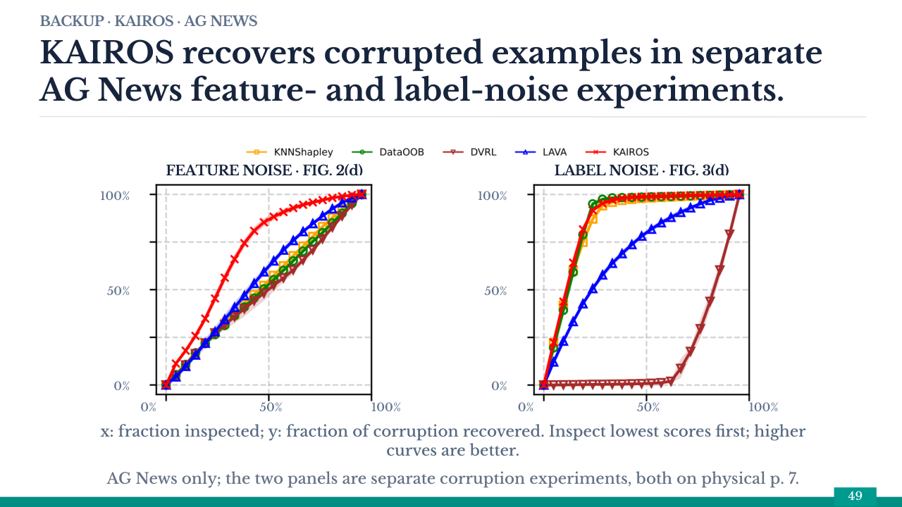
BACKUP · KAIROS · AG NEWS KAIROS recovers corrupted examples in separate AG News feature- and label-noise experiments. FEATURE NOISE · FIG. 2(d) LABEL NOISE · FIG. 3(d) x: fraction inspected; y: fraction of corruption recovered. Inspect lowest scores first; higher curves are better. AG News only; the two panels are separate corruption experiments, both on physical p. 7. 49 100% 50% 0% 0% 50% 100% 100% 50% 0% 0% 50% 100%
Across the four tested attacks, malicious points rise toward early inspection.
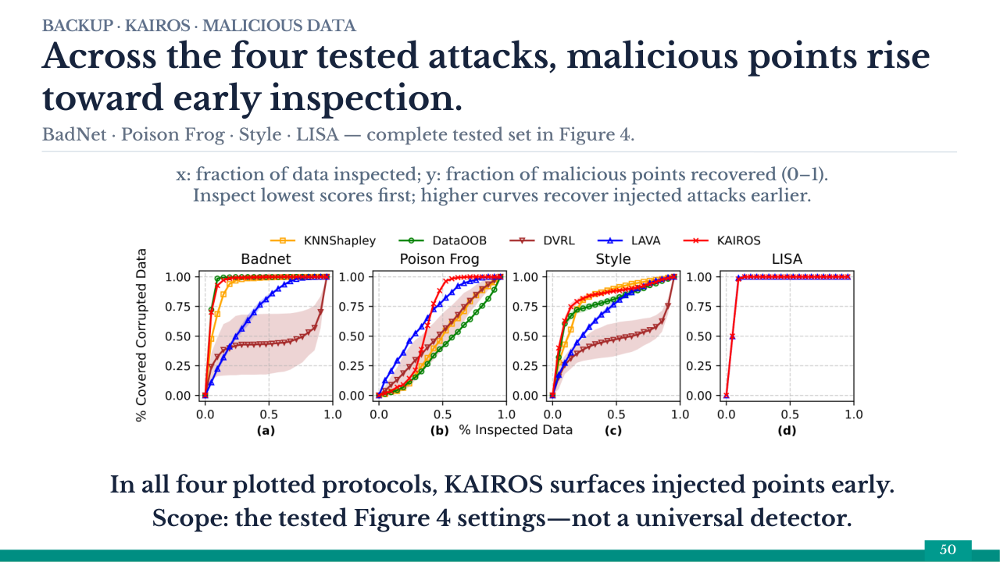
BACKUP · KAIROS · MALICIOUS DATA Across the four tested attacks, malicious points rise toward early inspection. BadNet · Poison Frog · Style · LISA — complete tested set in Figure 4. x: fraction of data inspected; y: fraction of malicious points recovered (0–1). Inspect lowest scores first; higher curves recover injected attacks earlier. In all four plotted protocols, KAIROS surfaces injected points early. Scope: the tested Figure 4 settings—not a universal detector. 50
A question about learning from uncertain data.
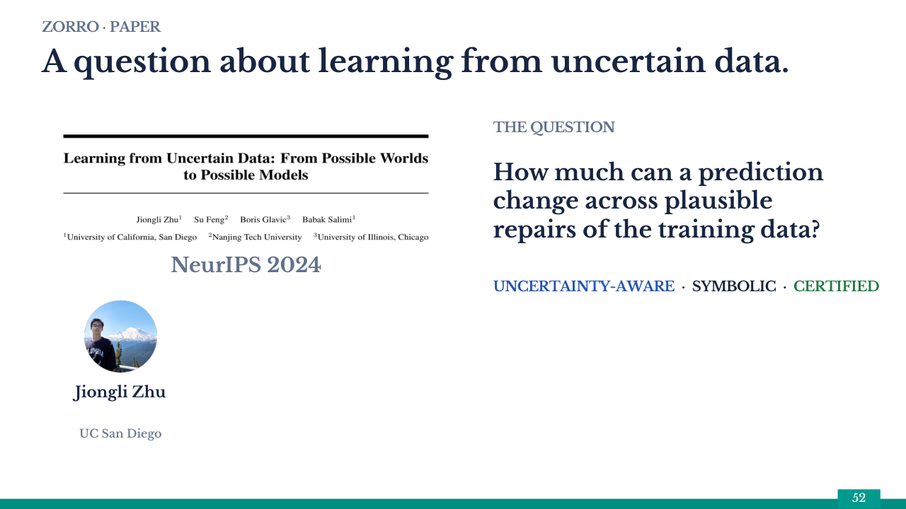
ZORRO · PAPER A question about learning from uncertain data. NeurIPS 2024 THE QUESTION How much can a prediction change across plausible repairs of the training data? UNCERTAINTY-AWARE · SYMBOLIC · CERTIFIED Jiongli Zhu UC San Diego 52
Shown range

… … Shown range [165K, 170K] Range of displayed completions Q(D1) = 165K Q(D2) = 170K Q(D3) = 170K Agreement across all represented worlds gives a certain answer. Otherwise, report the range and assess whether it matters for the decision. Answer variability Possible Worlds Semantics Q: Total income of the three shown rows ID Age Income … Loan 1 25 50K … 5K 2 NULL 60K … 8K 3 35 NULL … [10K, 12K] … … … … … ID Age Income … Loan 1 25 50K … 5K 2 30 60K … 8K 3 35 55K … 11K … … … … … ID Age Income … Loan 1 25 50K … 5K 2 35 60K … 8K 3 35 60K … 12K … … … … … ID Age Income … Loan 1 25 50K … 5K 2 35 60K … 8K 3 35 60K … 12K … … … … … 53
Dataset with Quality Issues
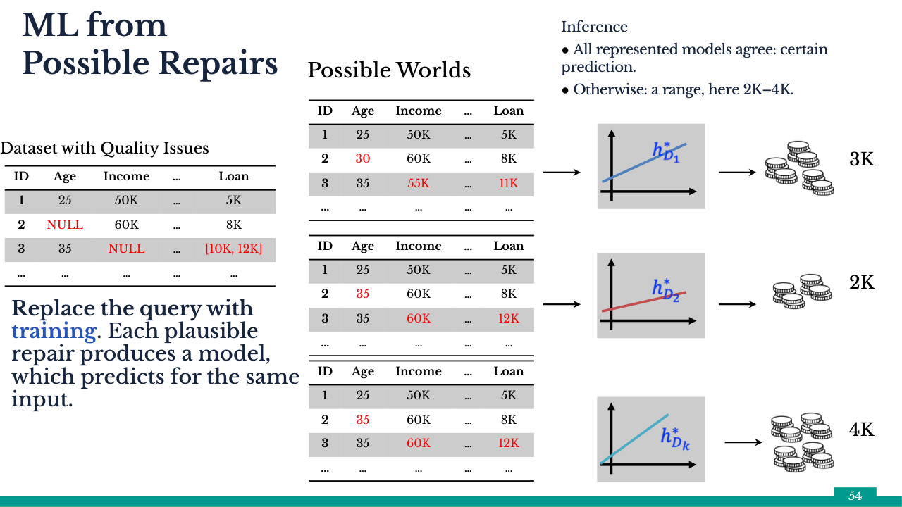
ID Age Income … Loan 1 25 50K … 5K 2 NULL 60K … 8K 3 35 NULL … [10K, 12K] … … … … … Dataset with Quality Issues Possible Worlds ID Age Income … Loan 1 25 50K … 5K 2 30 60K … 8K 3 35 55K … 11K … … … … … ID Age Income … Loan 1 25 50K … 5K 2 35 60K … 8K 3 35 60K … 12K … … … … … ID Age Income … Loan 1 25 50K … 5K 2 35 60K … 8K 3 35 60K … 12K … … … … … 3K 2K 4K Inference All represented models agree: certain prediction. Otherwise: a range, here 2K–4K. ML from Possible Repairs Replace the query with training. Each plausible repair produces a model, which predicts for the same input. 54
Compact reasoning over possible models

Compact reasoning over possible models Databases represent every possible world compactly: c-tables, probabilistic databases — and relational queries run on the representation.[Imieliński & Lipski, JACM 1984] [Sundarmurthy et al., ICDT 2017] [Suciu, Olteanu, Ré & Koch, 2011] Reasoning over them is still NP-hard: certain answers are coNP-complete, prediction ranges NP-hard.[Abiteboul, Kanellakis & Grahe, TCS 1991] [Zhu, Feng, Glavic & Salimi, ZORRO, NeurIPS 2024] No support for numerical optimization: closed under relational algebra, not iterated arithmetic; symbolic gradient descent grows exponentially. Abstract interpretation: a representation closed under arithmetic — every training step maps the shape to a shape of fixed size, in polynomial time; sound, precise up to a little slack.[Cousot & Cousot, POPL 1977] ZORRO uses zonotopes to represent uncertainty and its dependencies. 55
Dataset with Quality Issues
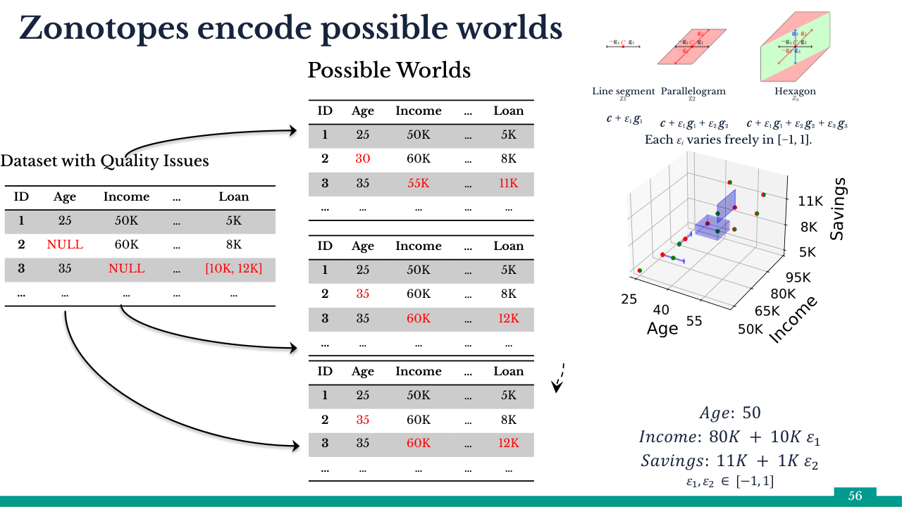
ID Age Income … Loan 1 25 50K … 5K 2 NULL 60K … 8K 3 35 NULL … [10K, 12K] … … … … … Dataset with Quality Issues Possible Worlds ID Age Income … Loan 1 25 50K … 5K 2 30 60K … 8K 3 35 55K … 11K … … … … … ID Age Income … Loan 1 25 50K … 5K 2 35 60K … 8K 3 35 60K … 12K … … … … … ID Age Income … Loan 1 25 50K … 5K 2 35 60K … 8K 3 35 60K … 12K … … … … … Zonotopes encode possible worlds 56 𝐴𝑔𝑒: 50 𝐼𝑛𝑐𝑜𝑚𝑒: 80𝐾 + 10𝐾 𝜀1 𝑆𝑎𝑣𝑖𝑛𝑔𝑠: 11𝐾 + 1𝐾 𝜀2 𝜀1, 𝜀2 ∈ [−1, 1] c + ε1 g1 c + ε1 g1 + ε2 g2 c + ε1 g1 + ε2 g2 + ε3 g3 Each εi varies freely in [−1, 1]. Line segment Parallelogram Hexagon
Possible World 1 Possible World 2
Possible World 1 Possible World 2 Zonotopes Abstract Learning (Zorro) 91+7.7⋅𝜀1+2.78⋅𝜀30.1+0.02⋅𝜀23100−278⋅𝜀1+0.08⋅𝜀3 WAge: WIncome: Intercept: Data uncertainty becomes model uncertainty 5080𝐾+10𝐾⋅𝜀111𝐾+𝜀2 ,𝜀1,𝜀2∈[−1, 1] Age: Income: Savings: 57
ZORRO: challenges and contributions
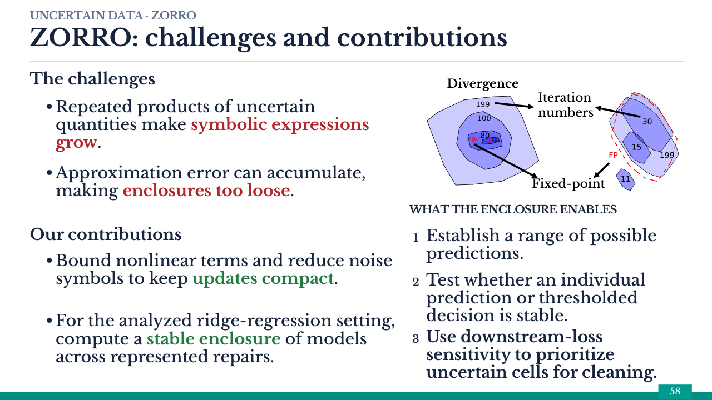
UNCERTAIN DATA · ZORRO ZORRO: challenges and contributions WHAT THE ENCLOSURE ENABLES 1 Establish a range of possible predictions. 2 Test whether an individual prediction or thresholded decision is stable. 3 Use downstream-loss sensitivity to prioritize uncertain cells for cleaning. Divergence Iteration numbers Fixed-point 58 The challenges Repeated products of uncertain quantities make symbolic expressions grow. Approximation error can accumulate, making enclosures too loose. Our contributions Bound nonlinear terms and reduce noise symbols to keep updates compact. For the analyzed ridge-regression setting, compute a stable enclosure of models across represented repairs.
Budgeted data cleaning with ZORRO
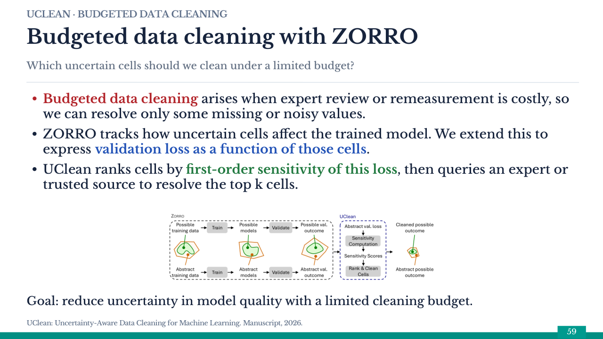
UCLEAN · BUDGETED DATA CLEANING Budgeted data cleaning with ZORRO Which uncertain cells should we clean under a limited budget? Budgeted data cleaning arises when expert review or remeasurement is costly, so we can resolve only some missing or noisy values. ZORRO tracks how uncertain cells affect the trained model. We extend this to express validation loss as a function of those cells. UClean ranks cells by first-order sensitivity of this loss, then queries an expert or trusted source to resolve the top k cells. Goal: reduce uncertainty in model quality with a limited cleaning budget. UClean: Uncertainty-Aware Data Cleaning for Machine Learning. Manuscript, 2026. 59
Targeted cleaning under a limited budget
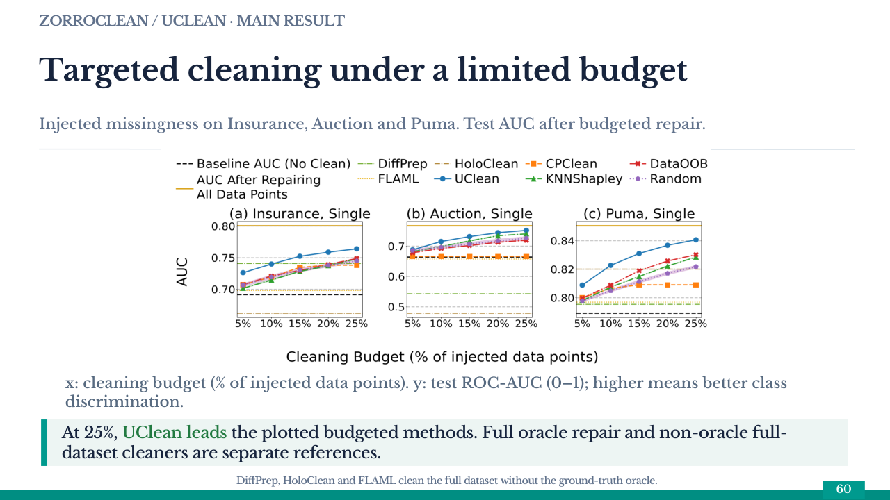
ZORROCLEAN / UCLEAN · MAIN RESULT Targeted cleaning under a limited budget Injected missingness on Insurance, Auction and Puma. Test AUC after budgeted repair. At 25%, UClean leads the plotted budgeted methods. Full oracle repair and non-oracle full-dataset cleaners are separate references. DiffPrep, HoloClean and FLAML clean the full dataset without the ground-truth oracle. 60 x: cleaning budget (% of injected data points). y: test ROC-AUC (0–1); higher means better class discrimination.
Ground truth and KNN estimates stay inside the ZORRO causal-effect envelope.
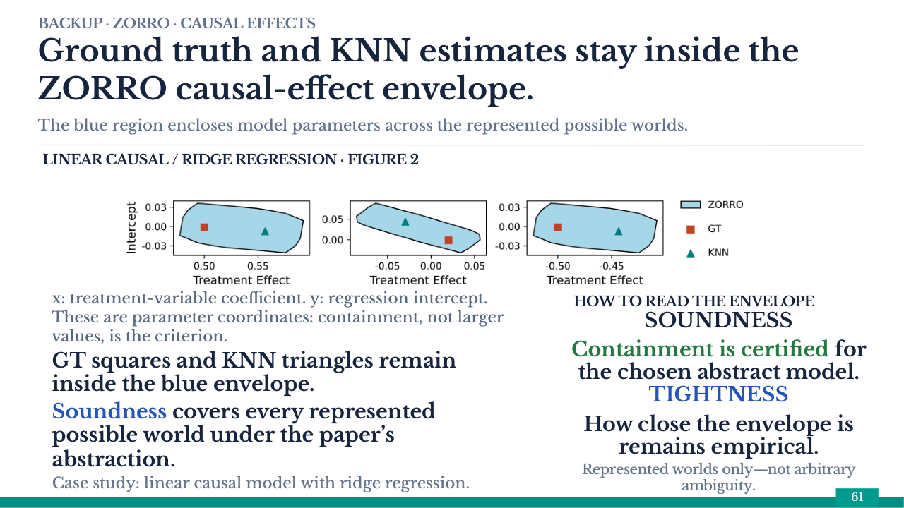
BACKUP · ZORRO · CAUSAL EFFECTS Ground truth and KNN estimates stay inside the ZORRO causal-effect envelope. The blue region encloses model parameters across the represented possible worlds. LINEAR CAUSAL / RIDGE REGRESSION · FIGURE 2 GT squares and KNN triangles remain inside the blue envelope. Soundness covers every represented possible world under the paper’s abstraction. Case study: linear causal model with ridge regression. HOW TO READ THE ENVELOPE SOUNDNESS Containment is certified for the chosen abstract model. TIGHTNESS How close the envelope is remains empirical. Represented worlds only—not arbitrary ambiguity. 61 x: treatment-variable coefficient. y: regression intercept. These are parameter coordinates: containment, not larger values, is the criterion.
ZORRO encloses the loss across all represented possible worlds.
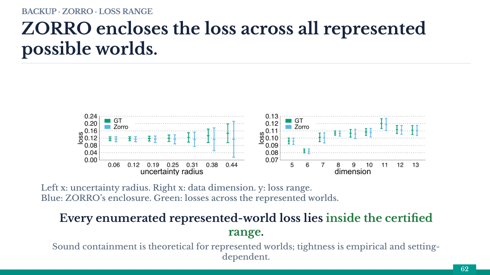
BACKUP · ZORRO · LOSS RANGE ZORRO encloses the loss across all represented possible worlds. Every enumerated represented-world loss lies inside the certified range. Sound containment is theoretical for represented worlds; tightness is empirical and setting-dependent. 62 Left x: uncertainty radius. Right x: data dimension. y: loss range. Blue: ZORRO’s enclosure. Green: losses across the represented worlds.
UClean recovers test AUC at smaller cleaning budgets
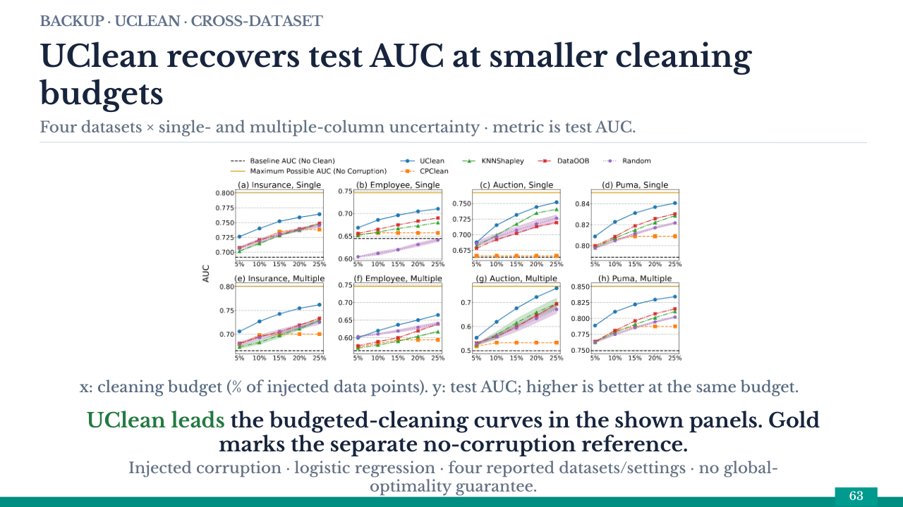
BACKUP · UCLEAN · CROSS-DATASET UClean recovers test AUC at smaller cleaning budgets Four datasets × single- and multiple-column uncertainty · metric is test AUC. UClean leads the budgeted-cleaning curves in the shown panels. Gold marks the separate no-corruption reference. Injected corruption · logistic regression · four reported datasets/settings · no global-optimality guarantee. 63 x: cleaning budget (% of injected data points). y: test AUC; higher is better at the same budget.
UClean runtime as the Adult sample grows
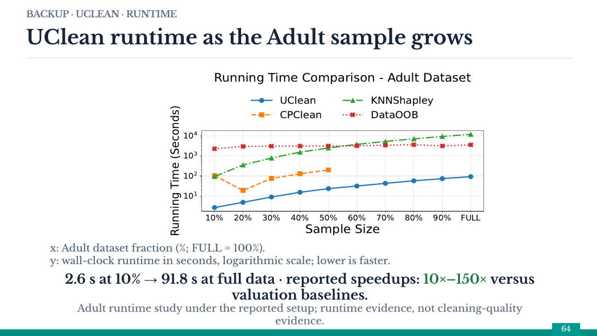
BACKUP · UCLEAN · RUNTIME UClean runtime as the Adult sample grows 2.6 s at 10% → 91.8 s at full data · reported speedups: 10×–150× versus valuation baselines. Adult runtime study under the reported setup; runtime evidence, not cleaning-quality evidence. 64 x: Adult dataset fraction (%; FULL = 100%). y: wall-clock runtime in seconds, logarithmic scale; lower is faster.
TokenSwap suppresses extreme memorization across two domains.
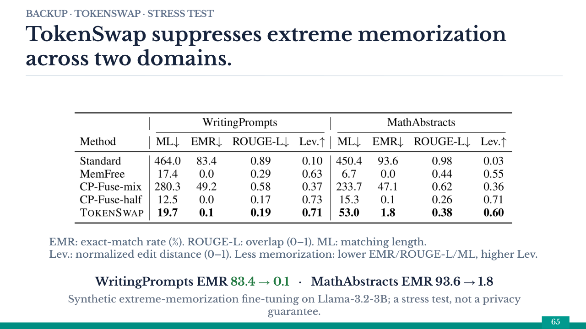
BACKUP · TOKENSWAP · STRESS TEST TokenSwap suppresses extreme memorization across two domains. WritingPrompts EMR 83.4 → 0.1 · MathAbstracts EMR 93.6 → 1.8 Synthetic extreme-memorization fine-tuning on Llama-3.2-3B; a stress test, not a privacy guarantee. 65 EMR: exact-match rate (%). ROUGE-L: overlap (0–1). ML: matching length. Lev.: normalized edit distance (0–1). Less memorization: lower EMR/ROUGE-L/ML, higher Lev.
TokenSwap across Pythia model sizes
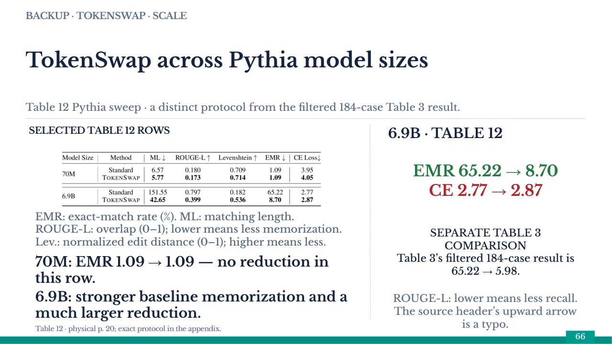
BACKUP · TOKENSWAP · SCALE TokenSwap across Pythia model sizes Table 12 Pythia sweep · a distinct protocol from the filtered 184-case Table 3 result. SELECTED TABLE 12 ROWS 70M: EMR 1.09 → 1.09 — no reduction in this row. 6.9B: stronger baseline memorization and a much larger reduction. Table 12 · physical p. 20; exact protocol in the appendix. 6.9B · TABLE 12 EMR 65.22 → 8.70 CE 2.77 → 2.87 SEPARATE TABLE 3 COMPARISON Table 3’s filtered 184-case result is 65.22 → 5.98. ROUGE-L: lower means less recall. The source header’s upward arrow is a typo. 66 EMR: exact-match rate (%). ML: matching length. ROUGE-L: overlap (0–1); lower means less memorization. Lev.: normalized edit distance (0–1); higher means less.
FINCH balances adaptation and retention
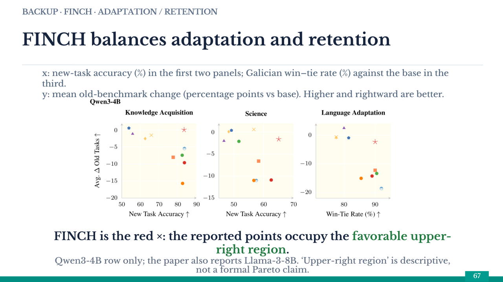
BACKUP · FINCH · ADAPTATION / RETENTION FINCH balances adaptation and retention FINCH is the red ×: the reported points occupy the favorable upper-right region. Qwen3-4B row only; the paper also reports Llama-3-8B. ‘Upper-right region’ is descriptive, not a formal Pareto claim. 67 x: new-task accuracy (%) in the first two panels; Galician win–tie rate (%) against the base in the third. y: mean old-benchmark change (percentage points vs base). Higher and rightward are better.
Reliability improves, but calibration still worsens
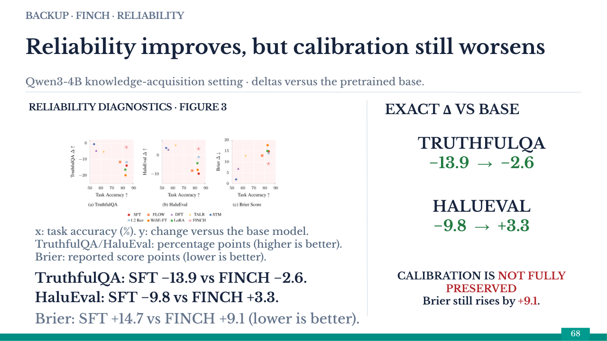
BACKUP · FINCH · RELIABILITY Reliability improves, but calibration still worsens Qwen3-4B knowledge-acquisition setting · deltas versus the pretrained base. RELIABILITY DIAGNOSTICS · FIGURE 3 TruthfulQA: SFT −13.9 vs FINCH −2.6. HaluEval: SFT −9.8 vs FINCH +3.3. Brier: SFT +14.7 vs FINCH +9.1 (lower is better). EXACT Δ VS BASE TRUTHFULQA −13.9 → −2.6 HALUEVAL −9.8 → +3.3 CALIBRATION IS NOT FULLY PRESERVED Brier still rises by +9.1. 68 x: task accuracy (%). y: change versus the base model. TruthfulQA/HaluEval: percentage points (higher is better). Brier: reported score points (lower is better).
Complementary skills improve candidate coverage
BACKUP · DIVSKILL-SQL · COVERAGE Complementary skills improve candidate coverage On the 100-instance diagnostic subsets, baselines need 3–8 more passes to reach comparable candidate coverage. Subset-level Pass@K diagnostic—not selected accuracy and not the full end-to-end benchmark. 69 Spider 2.0-Lite BIRD-Critic x: generated candidates per instance (k). y: instances with at least one correct candidate (%). Higher curves mean greater candidate coverage.
Snowflake error diagnostics
BACKUP · DIVSKILL-SQL · ERROR DIAGNOSTIC Snowflake error diagnostics Diagnostic counts from the reported Snowflake subset—not global error rates. FOCUSED ERROR ROWS · TABLE 3 Solvable invalid pools decline from 6 to 2. Missing-function errors decline from 6 to 2. Full Table 3 · physical p. 7; counts are diagnostic, not rates. STRONGEST REDUCTIONS SOLVABLE INVALID POOLS 6 → 2 MISSING FUNCTIONS 6 → 2 Snowflake diagnostic counts only—not global error frequencies. 70
RKHS and MMD: the full derivation
APPENDIX · RKHS AND MMD RKHS and MMD: the full derivation How can a distance between distributions reduce to pairwise similarities? The route through this appendix Points become kernel features. Distributions become mean features. Their RKHS distance becomes a computable kernel average. 𝑃, 𝑄: 𝑑𝑖𝑠𝑡𝑟𝑖𝑏𝑢𝑡𝑖𝑜𝑛𝑠 𝑋 ∼ 𝑃, 𝑌 ∼ 𝑄 P, Q: distributions X ∼ P, Y ∼ Q k: a chosen positive-semidefinite kernel H: its function space One construction, two views: a score gap and a feature-space distance. Gretton et al. (2012) · Muandet et al. (2017) 71
A Gaussian kernel turns a point into a bell
APPENDIX · RKHS AND MMD A Gaussian kernel turns a point into a bell Fix a point x. Its feature is the whole function obtained by varying the other input. 𝑘𝜎(𝑥,𝑦) = 𝑒𝑥𝑝−𝑥−𝑦22𝜎2 k_{σ}(x,y) = exp(−(‖x−y‖^{2})/(2σ^{2})) 𝜑(𝑥) = 𝑘(·,𝑥) φ(x) = k(·,x) 𝜑(𝑥), 𝜑(𝑦)𝐻 = 𝑘(𝑥,𝑦) ⟨φ(x), φ(y)⟩_{H} = k(x,y) σ sets the comparison scale. For this kernel, k(x,x)=1. The kernel computes an inner product between feature functions. Gretton et al. (2012) · Muandet et al. (2017) 72
The RKHS is built from kernel features
APPENDIX · RKHS AND MMD The RKHS is built from kernel features Begin with finite weighted sums of the features. 𝑓 = 𝑖=1𝑛𝑎𝑖𝜑(𝑥𝑖), ℎ = 𝑗=1𝑚𝑏𝑗𝜑(𝑧𝑗) f = Σ[i=1;n]a_{i}φ(x_{i}), h = Σ[j=1;m]b_{j}φ(z_{j}) 𝑓, ℎ𝐻 = 𝑖=1𝑛𝑗=1𝑚𝑎𝑖𝑏𝑗𝑘(𝑥𝑖,𝑧𝑗) ⟨f, h⟩_{H} = Σ[i=1;n]Σ[j=1;m]a_{i}b_{j}k(x_{i},z_{j}) A positive-semidefinite kernel makes squared lengths nonnegative. Completing this space adds limits in the RKHS norm. Functions behave like vectors, with geometry determined by k. Gretton et al. (2012) · Muandet et al. (2017) 73
The reproducing property evaluates a function
APPENDIX · RKHS AND MMD The reproducing property evaluates a function Use the feature centered at x as a probe for f. 𝑓, 𝜑(𝑥)𝐻 = 𝑖=1𝑛𝑎𝑖𝜑(𝑥𝑖), 𝜑(𝑥)𝐻 ⟨f, φ(x)⟩_{H} = ⟨Σ[i=1;n]a_{i}φ(x_{i}), φ(x)⟩_{H} = 𝑖=1𝑛𝑎𝑖𝜑(𝑥𝑖), 𝜑(𝑥)𝐻 = Σ[i=1;n]a_{i}⟨φ(x_{i}), φ(x)⟩_{H} = 𝑖=1𝑛𝑎𝑖𝑘(𝑥𝑖,𝑥) = 𝑓(𝑥) = Σ[i=1;n]a_{i}k(x_{i},x) = f(x) Evaluating f at x is an inner product with the feature of x. Gretton et al. (2012) · Muandet et al. (2017) 74
The norm controls the scale of a score
APPENDIX · RKHS AND MMD The norm controls the scale of a score 𝑓𝐻2 = 𝑓, 𝑓𝐻 = 𝑖,𝑗𝑎𝑖𝑎𝑗𝑘(𝑥𝑖,𝑥𝑗) = 𝑎𝑇𝐾𝑎 ‖f‖_{H}^{2} = ⟨f, f⟩_{H} = Σ[i,j;]a_{i}a_{j}k(x_{i},x_{j}) = a^{T}Ka Cross terms matter: the norm depends on weights and kernel similarities. 𝑓(𝑥) = 𝑓, 𝜑(𝑥)𝐻 ≤ 𝑓𝐻𝑘(𝑥,𝑥) |f(x)| = |⟨f, φ(x)⟩_{H}| ≤ ‖f‖_{H}sqrt(k(x,x)) For a normalized Gaussian kernel, a unit-norm function has |f(x)| ≤ 1. A norm cap prevents arbitrary rescaling of the average-score gap. Gretton et al. (2012) · Muandet et al. (2017) 75
A distribution becomes a mean feature
APPENDIX · RKHS AND MMD A distribution becomes a mean feature Population mean and its sample version 𝜇𝑃 = 𝐸𝑋∼𝑃𝜑(𝑋), 𝜇𝑃 = 1𝑛𝑖=1𝑛𝜑(𝑥𝑖) μ_{P} = E_{X∼P}φ(X), hat(μ)_{P} = (1)/(n)Σ[i=1;n]φ(x_{i}) Average scores become inner products 𝐸𝑃 𝑓 = 𝐸𝑃𝑓, 𝜑(𝑋)𝐻 = 𝑓, 𝜇𝑃𝐻 E_{P} f = E_{P}⟨f, φ(X)⟩_{H} = ⟨f, μ_{P}⟩_{H} Repeat the same construction for Q, using the same kernel. The mean embedding summarizes every RKHS average score. Gretton et al. (2012) · Muandet et al. (2017) 76
MMD asks for the largest average-score gap
APPENDIX · RKHS AND MMD MMD asks for the largest average-score gap Hold P, Q and k fixed. Choose a scoring function f from the RKHS unit ball. 𝑀𝑀𝐷𝑘(𝑃,𝑄) = 𝑠𝑢𝑝𝑓𝐻≤1𝐸𝑃 𝑓 − 𝐸𝑄 𝑓 MMD_{k}(P,Q) = sup[‖f‖_{H}≤1]|E_{P} f − E_{Q} f| 𝐸𝑃 𝑓 − 𝐸𝑄 𝑓 = 𝑓, 𝜇𝑃−𝜇𝑄𝐻 E_{P} f − E_{Q} f = ⟨f, μ_{P}−μ_{Q}⟩_{H} The class is symmetric: whenever f is allowed, −f is also allowed. The absolute and signed supremum give the same MMD. Gretton et al. (2012) · Muandet et al. (2017) 77
Cauchy–Schwarz solves the supremum
APPENDIX · RKHS AND MMD Cauchy–Schwarz solves the supremum 𝛥 = 𝜇𝑃 − 𝜇𝑄 Δ = μ_{P} − μ_{Q} 𝑓, 𝛥𝐻 ≤ 𝑓𝐻𝛥𝐻 ≤ 𝛥𝐻 |⟨f, Δ⟩_{H}| ≤ ‖f‖_{H}‖Δ‖_{H} ≤ ‖Δ‖_{H} When Δ is nonzero, choose a unit vector pointing along Δ. 𝑓∗ = 𝛥𝛥𝐻 𝑓∗, 𝛥𝐻 = 𝛥𝐻 f^{*} = (Δ)/(‖Δ‖_{H}) ⟨f^{*}, Δ⟩_{H} = ‖Δ‖_{H} When Δ=0, every feasible score has zero gap; no normalization is needed. Therefore MMD equals the RKHS distance between the means. Gretton et al. (2012) · Muandet et al. (2017) 78
Expanding the squared distance
APPENDIX · RKHS AND MMD Expanding the squared distance 𝑀𝑀𝐷𝑘2(𝑃,𝑄) = 𝜇𝑃−𝜇𝑄𝐻2 MMD_{k}^{2}(P,Q) = ‖μ_{P}−μ_{Q}‖_{H}^{2} = 𝜇𝑃−𝜇𝑄, 𝜇𝑃−𝜇𝑄𝐻 = ⟨μ_{P}−μ_{Q}, μ_{P}−μ_{Q}⟩_{H} = 𝜇𝑃, 𝜇𝑃𝐻 + 𝜇𝑄, 𝜇𝑄𝐻 = ⟨μ_{P}, μ_{P}⟩_{H} + ⟨μ_{Q}, μ_{Q}⟩_{H} − 2𝜇𝑃, 𝜇𝑄𝐻 − 2⟨μ_{P}, μ_{Q}⟩_{H} Two within-distribution terms, minus twice the cross term. Gretton et al. (2012) · Muandet et al. (2017) 79
The kernel trick gives three expectations
APPENDIX · RKHS AND MMD The kernel trick gives three expectations Take independent X, X′ from P and independent Y, Y′ from Q. 𝜇𝑃, 𝜇𝑄𝐻 = 𝐸𝑋,𝑌𝜑(𝑋), 𝜑(𝑌)𝐻 = 𝐸𝑋,𝑌𝑘(𝑋,𝑌) ⟨μ_{P}, μ_{Q}⟩_{H} = E_{X,Y}⟨φ(X), φ(Y)⟩_{H} = E_{X,Y}k(X,Y) Apply the same identity to both within-distribution terms 𝑀𝑀𝐷𝑘2(𝑃,𝑄) = 𝐸𝑋,𝑋′∼𝑃𝑘(𝑋,𝑋′) + 𝐸𝑌,𝑌′∼𝑄𝑘(𝑌,𝑌′) MMD_{k}^{2}(P,Q) = E_{X,X′∼P}k(X,X′) + E_{Y,Y′∼Q}k(Y,Y′) − 2𝐸𝑋∼𝑃,𝑌∼𝑄𝑘(𝑋,𝑌) − 2E_{X∼P,Y∼Q}k(X,Y) Within P + within Q − 2 × across P and Q. Gretton et al. (2012) · Muandet et al. (2017) 80
The empirical distance includes self-pairs
APPENDIX · RKHS AND MMD The empirical distance includes self-pairs With n points from P and m points from Q, compare the empirical mean features. 𝑉𝑛,𝑚 = 𝜇𝑃−𝜇𝑄𝐻2 V_{n,m} = ‖hat(μ)_{P}−hat(μ)_{Q}‖_{H}^{2} = 1𝑛2𝑖,𝑗=1𝑛𝑘(𝑥𝑖,𝑥𝑗) + 1𝑚2𝑖,𝑗=1𝑚𝑘(𝑦𝑖,𝑦𝑗) = (1)/(n^{2})Σ[i,j=1;n]k(x_{i},x_{j}) + (1)/(m^{2})Σ[i,j=1;m]k(y_{i},y_{j}) − 2𝑛𝑚𝑖=1𝑛𝑗=1𝑚𝑘(𝑥𝑖,𝑦𝑗) − (2)/(nm)Σ[i=1;n]Σ[j=1;m]k(x_{i},y_{j}) Nonnegative; biased for population MMD² because of self-pairs. Gretton et al. (2012) · Muandet et al. (2017) 81
The unbiased estimator removes self-pairs
APPENDIX · RKHS AND MMD The unbiased estimator removes self-pairs Assume independent iid samples with n,m ≥ 2. Keep all cross-sample pairs. 𝑈𝑛,𝑚 = 1𝑛(𝑛−1)𝑖≠𝑗𝑛𝑘(𝑥𝑖,𝑥𝑗) U_{n,m} = (1)/(n(n−1))Σ[i≠j;n]k(x_{i},x_{j}) + 1𝑚(𝑚−1)𝑖≠𝑗𝑚𝑘(𝑦𝑖,𝑦𝑗) + (1)/(m(m−1))Σ[i≠j;m]k(y_{i},y_{j}) − 2𝑛𝑚𝑖=1𝑛𝑗=1𝑚𝑘(𝑥𝑖,𝑦𝑗) − (2)/(nm)Σ[i=1;n]Σ[j=1;m]k(x_{i},y_{j}) Unbiased for population MMD², but a realized value may be negative. Gretton et al. (2012) · Muandet et al. (2017) 82
A complete example with two point masses
APPENDIX · RKHS AND MMD A complete example with two point masses Let P put all mass at 0 and Q put all mass at a. Use a Gaussian kernel. 𝜇𝑃 = 𝜑(0), 𝜇𝑄 = 𝜑(𝑎), 𝑘(0,0)=𝑘(𝑎,𝑎)=1 μ_{P} = φ(0), μ_{Q} = φ(a), k(0,0)=k(a,a)=1 𝑀𝑀𝐷𝑘2(𝑃,𝑄) = 𝜑(0)−𝜑(𝑎)𝐻2 = 1 + 1 − 2𝑘(0,𝑎) MMD_{k}^{2}(P,Q) = ‖φ(0)−φ(a)‖_{H}^{2} = 1 + 1 − 2k(0,a) = 21−𝑒𝑥𝑝−𝑎22𝜎2 = 2(1−exp(−(a^{2})/(2σ^{2}))) For a=σ=1: k(0,1)=0.60653, MMD²=0.78694, MMD=0.88710. Gretton et al. (2012) · Muandet et al. (2017) 83
The kernel determines what MMD detects
APPENDIX · RKHS AND MMD The kernel determines what MMD detects Linear kernel 𝑘(𝑥,𝑦)=𝑥𝑇𝑦 𝑀𝑀𝐷𝑘(𝑃,𝑄) = 𝐸𝑃𝑋−𝐸𝑄𝑌 k(x,y)=x^{T}y MMD_{k}(P,Q) = ‖E_{P}X−E_{Q}Y‖ Only mean differences, assuming the means exist. Inhomogeneous quadratic kernel 𝑘(𝑥,𝑦)=(1+𝑥𝑇𝑦)2 k(x,y)=(1+x^{T}y)^{2} First and second raw moments, assuming finite second moments. Gaussian on ℝᵈ, σ>0: characteristic, so MMD=0 exactly when P=Q. Sriperumbudur et al. (2010) · Muandet et al. (2017) 84
Bandwidth and testing answer different questions
APPENDIX · RKHS AND MMD Bandwidth and testing answer different questions Choose a comparison scale For exp(−distance²/(2σ²)), one median heuristic sets σ to the median nonzero pooled pairwise distance. It is a starting point. Calibrate the observed discrepancy For independent iid samples under P=Q, labels are exchangeable. Permute labels, recompute, and compare with the observed statistic. Label-dependent kernel tuning must be repeated within permutations or performed on independent data. A bandwidth chooses sensitivity; a calibrated test assesses evidence. Gretton et al. (2012) · Muandet et al. (2017) 85
Computation: exact pairs or approximate features
APPENDIX · RKHS AND MMD Computation: exact pairs or approximate features Exact empirical computation 𝑂(𝑛2+𝑚2+𝑛𝑚) 𝑘𝑒𝑟𝑛𝑒𝑙 𝑒𝑣𝑎𝑙𝑢𝑎𝑡𝑖𝑜𝑛𝑠 O(n^{2}+m^{2}+nm) kernel evaluations Accumulate kernel blocks to reduce memory without changing the statistic. Random Fourier features for shift-invariant kernels 𝑘(𝑥,𝑦) ≈ 𝑧(𝑥)𝑇𝑧(𝑦), 𝑧(𝑥)∈ℝ𝐷 k(x,y) ≈ z(x)^{T}z(y), z(x)∈ℝ^{D} 𝑉𝑛,𝑚 ≈ 𝑧̄𝑃−𝑧̄𝑄2 V_{n,m} ≈ ‖z̄_{P}−z̄_{Q}‖^{2} Mean-feature accumulation costs O((n+m)D), plus feature evaluation. Gretton et al. (2012) · Rahimi & Recht (2007) 86
The critic gives a local data-valuation score
APPENDIX · RKHS AND MMD The critic gives a local data-valuation score 𝑔(𝑥)=𝐸𝑃𝑘(𝑋,𝑥)−𝐸𝑄𝑘(𝑌,𝑥), 𝑓∗(𝑥)=𝑔(𝑥)𝑀𝑀𝐷 g(x)=E_{P}k(X,x)−E_{Q}k(Y,x), f^{*}(x)=(g(x))/(MMD) 𝑄𝜀=(1−𝜀)𝑄+𝜀𝛿𝑥, 𝜇𝑄𝜀=𝜇𝑄+𝜀[𝜑(𝑥)−𝜇𝑄] Q_{ε}=(1−ε)Q+εδ_{x}, μ_{Q_{ε}}=μ_{Q}+ε[φ(x)−μ_{Q}] −𝑑𝑑𝜀𝛥−𝜀(𝜑(𝑥)−𝜇𝑄)𝐻2|𝜀=0 = 2𝛥, 𝜑(𝑥)−𝜇𝑄𝐻 −(d)/(dε)‖Δ−ε(φ(x)−μ_{Q})‖_{H}^{2}|ε=0 = 2⟨Δ, φ(x)−μ_{Q}⟩_{H} = 2[𝑔(𝑥)−𝐸𝑄𝑔] = 2[g(x)−E_{Q}g] For MMD>0: local decrease = f*(x) minus the Q-average of f*. A point helps locally when its critic score exceeds the current Q average. Gretton et al. (2012) · Muandet et al. (2017) 87
Recap: the identities and their boundaries
APPENDIX · RKHS AND MMD Recap: the identities and their boundaries 𝜑(𝑥)=𝑘(·,𝑥) 𝑓, 𝜑(𝑥)𝐻=𝑓(𝑥) φ(x)=k(·,x) ⟨f, φ(x)⟩_{H}=f(x) 𝜇𝑃=𝐸𝑃𝜑(𝑋) 𝐸𝑃𝑓=𝑓, 𝜇𝑃𝐻 μ_{P}=E_{P}φ(X) E_{P}f=⟨f, μ_{P}⟩_{H} 𝑀𝑀𝐷𝑘(𝑃,𝑄)=𝜇𝑃−𝜇𝑄𝐻 MMD_{k}(P,Q)=‖μ_{P}−μ_{Q}‖_{H} The plotted mean is a feature function, not generally a density. MMD uses RKHS geometry, not the area between curves. Population MMD, empirical squared distance, and an unbiased estimate of squared MMD are different objects. Features → means → norm → pairwise kernels. Gretton (2012); Muandet (2017); Sriperumbudur (2010); Rahimi & Recht (2007). Details in notes. 88
The reweighting path
APPENDIX · KAIROS The reweighting path Take n equally weighted observations, with n > 1. Keep the reference P fixed. KAIROS, NeurIPS 2025, Definition 1. Leave-one-out algebra and Taylor expansion shown here. 𝑄 = 1𝑛𝑗=1𝑛𝛿𝑥𝑗 Q = (1/n) Σⱼ₌₁ⁿ δxⱼ Nudge Q toward the selected observation xᵢ 𝑄𝜀 = (1 − 𝜀)𝑄 + 𝜀𝛿𝑥𝑖 Qε = (1 − ε)Q + εδxᵢ Selected observation xᵢ Each other observation 𝑤𝑖(𝜀) = 1 − 𝜀𝑛 + 𝜀 wᵢ(ε) = (1 − ε)/n + ε 𝑤𝑗(𝜀) = 1 − 𝜀𝑛 (𝑗 ≠ 𝑖) wⱼ(ε) = (1 − ε)/n (j ≠ i) At ε = 0, Q is unchanged. The weights always sum to 1. Positive ε upweights xᵢ and negative ε downweights it. 89
Exact leave-one-out
APPENDIX · KAIROS Exact leave-one-out Choose ε so the selected observation’s weight becomes zero. KAIROS, NeurIPS 2025, Definition 1. Leave-one-out algebra and Taylor expansion shown here. 1 − 𝜀𝑛 + 𝜀 = 0 ⇒ 1 + (𝑛 − 1)𝜀 = 0 (1 − ε)/n + ε = 0 ⇒ 1 + (n − 1)ε = 0 𝜀𝐿𝑂𝑂 = −1𝑛 − 1 εLOO = −1/(n − 1) 𝑄𝜀𝐿𝑂𝑂 = 𝑛𝑛 − 1𝑄 − 1𝑛 − 1𝛿𝑥𝑖 QεLOO = nQ/(n − 1) − δxᵢ/(n − 1) = 1𝑛 − 1𝑗 ≠ 𝑖𝛿𝑥𝑗 = 𝑄−𝑖 = (1/(n − 1)) Σⱼ≠ᵢ δxⱼ = Q−i The selected weight is 0. Every other observation has weight 1/(n − 1). This is exactly the leave-one-out distribution. Example: n = 5 gives ε = −1/4, one weight of 0, and four weights of 1/4. 90
Why the approximation is first order
APPENDIX · KAIROS Why the approximation is first order Use the local slope to estimate the finite removal step. KAIROS, NeurIPS 2025, Definition 1. Leave-one-out algebra and Taylor expansion shown here. 𝑔(𝜀) = 𝑑(𝑃,𝑄𝜀), 𝐼𝐹𝑑(𝑥𝑖;𝑃,𝑄) = −𝑔′(0) g(ε) = d(P,Qε), IFd(xᵢ;P,Q) = −g′(0) Taylor expansion around ε = 0 𝑔(𝜀) − 𝑔(0) = 𝜀𝑔′(0) + 𝑅(𝜀) g(ε) − g(0) = εg′(0) + R(ε) Substitute ε = −1/(n − 1), the exact removal step: 𝑑(𝑃,𝑄−𝑖) − 𝑑(𝑃,𝑄) = 𝐼𝐹𝑑(𝑥𝑖;𝑃,𝑄)𝑛 − 1 + 𝑅𝑖 d(P,Q−i) − d(P,Q) = IFd(xᵢ;P,Q)/(n − 1) + Rᵢ First-order keeps slope × step and drops the remainder Rᵢ. Positive influence predicts that removal increases the discrepancy. Assume g is differentiable across 0 and twice differentiable with |g″| ≤ M on [−1/(n − 1), 0]. Then |Rᵢ| ≤ M / [2(n − 1)²]. A smaller step improves the approximation when curvature stays controlled. 91